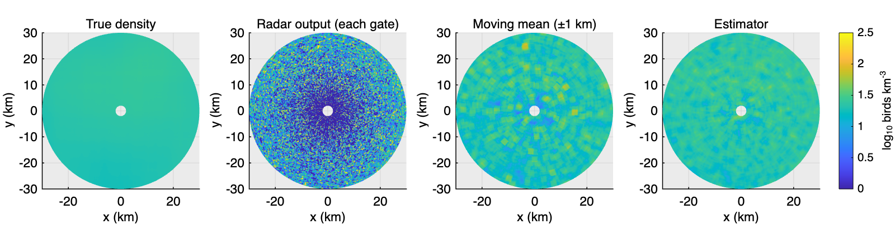
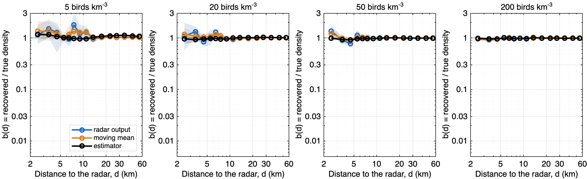
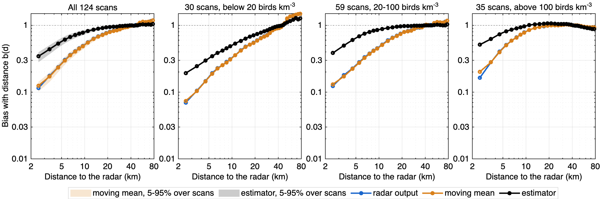
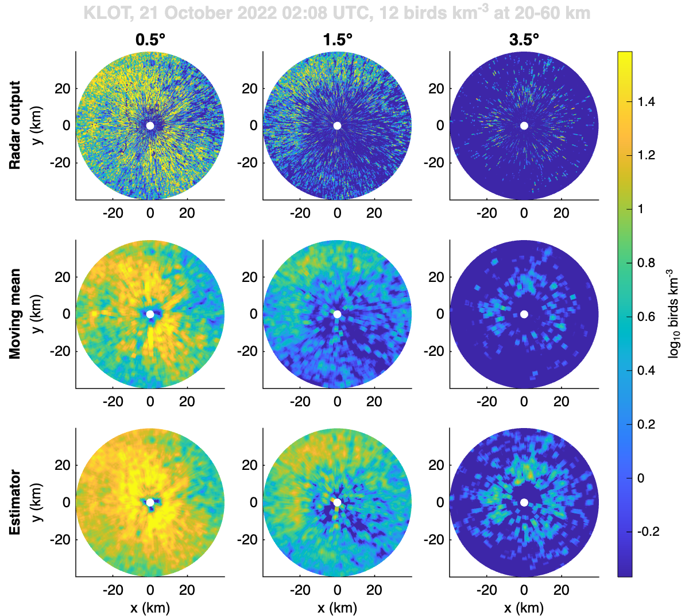
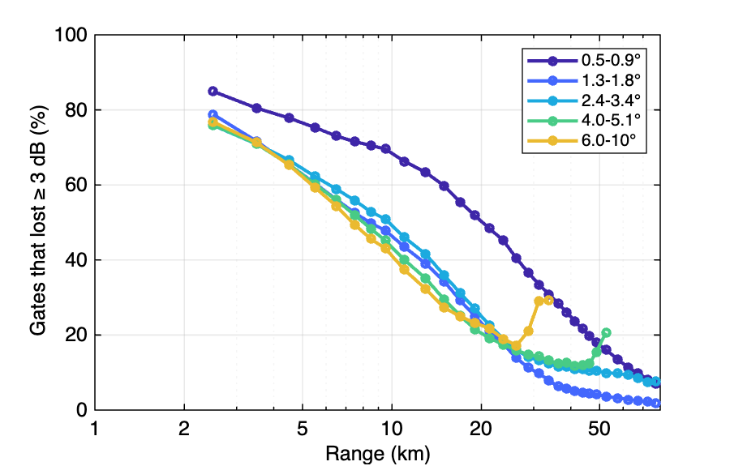
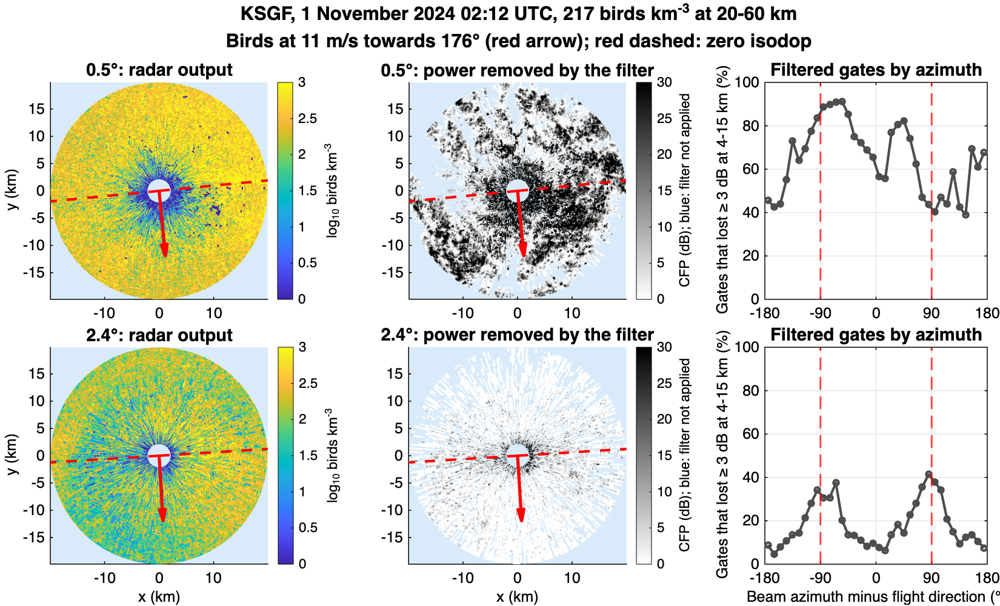
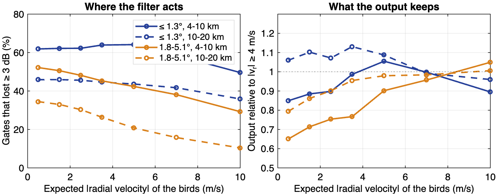

<title>Near-Range Gate Density</title>
<meta name="claude:viewport-fit-sides" content="cover">
<link rel="preconnect" href="https://fonts.googleapis.com">
<link rel="preconnect" href="https://fonts.gstatic.com" crossorigin>
<link rel="stylesheet" href="https://fonts.googleapis.com/css2?family=Newsreader:opsz,wght@6..72,500;6..72,600&family=Public+Sans:wght@400;600&family=JetBrains+Mono:wght@400;500&display=swap">
<script>
  window.MathJax = { tex: { inlineMath: [["\\(", "\\)"]], displayMath: [["\\[", "\\]"]] }, svg: { fontCache: "global" } };
</script>
<script src="https://cdnjs.cloudflare.com/ajax/libs/mathjax/3.2.2/es5/tex-svg.min.js" defer></script>
<style>
/* Layout: a single reading column (~68ch) for the argument, with figures and the two interactive panels allowed to run wider (up to 1100px), like a radar-processing technical note. */
:root {
  --bg: #f5f7f9;
  --surface: #ffffff;
  --ink: #17212b;
  --muted: #56626e;
  --rule: #d7dee5;
  --accent: #1f5fa8;      /* parula-blue: the estimator */
  --warn: #c46f0e;        /* the moving mean, as in the figures */
  --truth: #2f8f5b;       /* the true density in the interactive panels */
  --cfp: #6b44a8;         /* outlook: CFP */
  --code-bg: #eef2f6;
  --font-display: "Newsreader", "Iowan Old Style", Georgia, serif;
  --font-body: "Public Sans", "Segoe UI", system-ui, sans-serif;
  --font-mono: "JetBrains Mono", ui-monospace, Menlo, monospace;
}
@media (prefers-color-scheme: dark) {
  :root:not([data-theme="light"]) {
    --bg: #11161c; --surface: #18202a; --ink: #e3e9ef; --muted: #9aa7b4; --rule: #2c3745;
    --accent: #6ea8ec; --warn: #eba25a; --truth: #6cc996; --cfp: #b69be6; --code-bg: #1f2935; color-scheme: dark;
  }
}
:root[data-theme="dark"] {
  --bg: #11161c; --surface: #18202a; --ink: #e3e9ef; --muted: #9aa7b4; --rule: #2c3745;
  --accent: #6ea8ec; --warn: #eba25a; --truth: #6cc996; --cfp: #b69be6; --code-bg: #1f2935; color-scheme: dark;
}
body {
  background: var(--bg); color: var(--ink); font-family: var(--font-body); font-size: 16px; line-height: 1.6;
  padding-left: max(16px, env(safe-area-inset-left, 0px)); padding-right: max(16px, env(safe-area-inset-right, 0px));
  padding-block: 40px 80px;
}
main { max-width: 1100px; margin: 0 auto; display: grid; gap: 8px; }
.prose { max-width: 68ch; min-width: 0; }
h1, h2, h3 { font-family: var(--font-display); font-weight: 600; text-wrap: balance; line-height: 1.2; margin: 0; }
h1 { font-size: clamp(2rem, 4vw, 2.8rem); }
h2 { font-size: 1.6rem; margin-top: 40px; padding-top: 20px; border-top: 1px solid var(--rule); }
h3 { font-size: 1.2rem; margin-top: 20px; }
p, ul, ol { margin: 8px 0; }
li { margin: 4px 0; }
.eyebrow { font-family: var(--font-mono); font-size: 0.78rem; letter-spacing: 0.08em; text-transform: uppercase; color: var(--muted); }
.lede { font-size: 1.12rem; color: var(--muted); }
code, .num { font-family: var(--font-mono); font-size: 0.88em; }
code { background: var(--code-bg); padding: 1px 5px; border-radius: 4px; }
.math { overflow-x: auto; overflow-y: hidden; max-width: 100%; }
figure { margin: 16px 0; display: grid; gap: 8px; }
figure img { width: 100%; height: auto; border: 1px solid var(--rule); border-radius: 4px; background: #ffffff; }
.picker { display: grid; gap: 6px; }
.picker-row { display: flex; flex-wrap: wrap; gap: 6px; align-items: center; }
.picker-label { font-family: var(--font-mono); font-size: 0.75rem; letter-spacing: 0.08em; text-transform: uppercase; color: var(--muted); min-width: 4.5rem; }
button.chip { font: inherit; font-size: 0.85rem; padding: 3px 10px; border: 1px solid var(--rule); border-radius: 999px; background: var(--surface); color: var(--ink); cursor: pointer; }
button.chip:hover { border-color: var(--accent); }
button.chip[aria-pressed="true"] { background: var(--accent); border-color: var(--accent); color: var(--surface); }
.intro-panels { display: grid; grid-template-columns: repeat(auto-fit, minmax(260px, 1fr)); gap: 12px; }
.intro-panels svg { width: 100%; height: auto; background: var(--surface); border: 1px solid var(--rule); border-radius: 4px; }
.sk-layers line { stroke: var(--rule); stroke-dasharray: 2 4; }
.sk-beam { fill-opacity: 0.16; stroke-opacity: 0.5; }
.sk-ground, .sk-axis { stroke: var(--muted); stroke-width: 1.5; }
.sk-radar { fill: var(--ink); }
.sk-d { stroke: var(--ink); stroke-dasharray: 5 4; }
.sk-w { stroke: var(--accent); stroke-width: 6; stroke-linecap: round; }
.sk-profile { stroke: var(--truth); stroke-width: 2.5; fill: none; }
.sk-bar { fill-opacity: 0.85; }
.sk-c1 { fill: var(--accent); stroke: var(--accent); }
.sk-c2 { fill: var(--truth); stroke: var(--truth); }
.sk-c3 { fill: var(--cfp); stroke: var(--cfp); }
svg text.sk-t1 { fill: var(--accent); }
svg text.sk-t2 { fill: var(--truth); }
svg text.sk-t3 { fill: var(--cfp); }
svg.chart .intro-band { fill: var(--ink); fill-opacity: 0.12; stroke: none; }
svg text.sk-math { fill: var(--ink); font-family: "STIX Two Text", "Times New Roman", Times, serif; font-style: italic; font-size: 16px; }
svg.chart .intro-obs { stroke-width: 2.5; fill: none; }
svg.chart .intro-exp { stroke-width: 2; fill: none; stroke-dasharray: 6 4; }
svg text.sk-lbl { fill: var(--ink); font-size: 13px; }
svg text.sk-muted { fill: var(--muted); }
svg text.sk-b { font-style: italic; }
svg.chart .intro-output { stroke: var(--ink); stroke-width: 2.5; fill: none; }
svg.chart .intro-old { stroke: var(--warn); stroke-width: 2.5; fill: none; }
svg.chart .intro-one { stroke: var(--muted); stroke-dasharray: 2 3; }
svg.chart text.lbl-old { fill: var(--warn); }
svg.chart text.lbl-ink { fill: var(--ink); }
figcaption { font-size: 0.9rem; color: var(--muted); max-width: 90ch; }
.table-wrap { overflow-x: auto; margin: 12px 0; }
table { border-collapse: collapse; font-size: 0.9rem; font-variant-numeric: tabular-nums; min-width: 520px; }
th, td { padding: 6px 12px; border-bottom: 1px solid var(--rule); text-align: right; white-space: nowrap; }
th { font-weight: 600; color: var(--muted); }
th:first-child, td:first-child { text-align: left; }
td.text { text-align: left; white-space: normal; min-width: 260px; }
.summary { background: var(--surface); border: 1px solid var(--rule); border-radius: 6px; padding: 16px 20px; max-width: 80ch; }
.summary ul { padding-left: 20px; }
.k-est { color: var(--accent); font-weight: 600; }
.k-old { color: var(--warn); font-weight: 600; }
.k-cfp { color: var(--cfp); font-weight: 600; }
.k-truth { color: var(--truth); font-weight: 600; }
.note { background: var(--code-bg); border-radius: 4px; padding: 8px 12px; font-size: 0.92rem; }
.assume { background: var(--surface); border: 1px solid var(--rule); border-radius: 6px; padding: 12px 20px; max-width: 80ch; }
a { color: var(--accent); }
a:focus-visible, button:focus-visible, input:focus-visible { outline: 2px solid var(--accent); outline-offset: 2px; }

/* Interactive panels */
.lab { background: var(--surface); border: 1px solid var(--rule); border-radius: 6px; padding: 16px 20px; display: grid; gap: 12px; margin: 16px 0; min-width: 0; }
.lab-title { font-family: var(--font-mono); font-size: 0.78rem; letter-spacing: 0.08em; text-transform: uppercase; color: var(--muted); }
.controls { display: flex; flex-wrap: wrap; gap: 12px 28px; align-items: end; }
.control { display: grid; gap: 2px; min-width: 200px; flex: 1 1 200px; }
.control label { font-size: 0.85rem; color: var(--muted); display: flex; justify-content: space-between; gap: 8px; }
.control output { font-family: var(--font-mono); color: var(--ink); font-variant-numeric: tabular-nums; }
.control input[type=range] { width: 100%; accent-color: var(--accent); }
button.redraw { font: inherit; font-size: 0.9rem; padding: 6px 14px; border: 1px solid var(--rule); border-radius: 4px; background: var(--bg); color: var(--ink); cursor: pointer; }
button.redraw:hover { border-color: var(--accent); }
.stats { display: grid; grid-template-columns: repeat(auto-fit, minmax(150px, 1fr)); gap: 8px 20px; }
.stat { display: grid; gap: 0; }
.stat span { font-size: 0.8rem; color: var(--muted); }
.stat b { font-family: var(--font-mono); font-weight: 500; font-size: 1.05rem; font-variant-numeric: tabular-nums; }
.plots { display: grid; grid-template-columns: repeat(auto-fit, minmax(300px, 1fr)); gap: 16px; }
.plots > div { min-width: 0; display: grid; gap: 4px; align-content: start; }
.plot-caption { font-size: 0.8rem; color: var(--muted); }
.fig-num { color: var(--ink); }
a.fig-ref { color: inherit; text-decoration: underline; text-decoration-color: var(--rule); text-underline-offset: 2px; }
svg.chart { width: 100%; height: auto; display: block; overflow: visible; }
svg.chart text { fill: var(--muted); font-family: var(--font-body); font-size: 11px; }
svg.chart .axis { stroke: var(--muted); stroke-width: 1; fill: none; }
svg.chart .grid { stroke: var(--rule); stroke-width: 1; fill: none; }
svg.chart .bar { fill: var(--accent); fill-opacity: 0.55; }
svg.chart .bar-none { fill: var(--muted); fill-opacity: 0.45; }
svg.chart .truth { stroke: var(--truth); stroke-width: 2; fill: none; }
svg.chart .old { stroke: var(--warn); stroke-width: 2; fill: none; stroke-dasharray: 5 3; }
svg.chart .mean { stroke: var(--ink); stroke-width: 1.5; fill: none; stroke-dasharray: 2 3; }
svg.chart .single { stroke: var(--muted); stroke-width: 1; fill: none; stroke-opacity: 0.35; }
svg.chart .post { stroke: var(--accent); stroke-width: 2.5; fill: none; }
svg.chart .band { fill: var(--accent); fill-opacity: 0.12; }
svg.chart text.lbl-truth { fill: var(--truth); }
svg.chart text.lbl-old { fill: var(--warn); }
svg.chart text.lbl-est { fill: var(--accent); }
svg.chart text.lbl-ink { fill: var(--ink); }
.heat-wrap { display: grid; gap: 4px; }
canvas.heat { width: 100%; display: block; border: 1px solid var(--rule); border-radius: 4px; background: var(--surface); }
.cbar { display: grid; grid-template-columns: auto 1fr auto; gap: 8px; align-items: center; font-size: 0.75rem; color: var(--muted); font-family: var(--font-mono); }
.cbar i { height: 8px; border-radius: 2px; background: linear-gradient(90deg, #352a87, #0f5cdd, #1481d6, #06a4ca, #2eb7a4, #87bf77, #d1bb59, #fec832, #f9fb0e); }
.legend { display: flex; flex-wrap: wrap; gap: 4px 16px; font-size: 0.8rem; color: var(--muted); }
.legend span::before { content: ""; display: inline-block; width: 16px; height: 0; border-top: 2px solid currentColor; vertical-align: middle; margin-right: 6px; }
.legend .l-truth { color: var(--truth); }
.legend .l-old { color: var(--warn); }
.legend .l-mean { color: var(--ink); }
.legend .l-post { color: var(--accent); }
.legend .l-single { color: var(--muted); }
@media (prefers-reduced-motion: reduce) { * { transition: none !important; } }

/* Parts, and the colours of the likelihood panel (section 3) */
:root { --c-bird: #1d9e75; --c-insect: #ba7517; --c-rain: #378add; --c-clutter: #d85a30; --c-radar: #9aa3ab; --c-gate: #6b5fd3; }
@media (prefers-color-scheme: dark) { :root:not([data-theme="light"]) { --c-bird: #5dcaa5; --c-insect: #ef9f27; --c-rain: #85b7eb; --c-clutter: #f0997b; --c-radar: #6c7681; --c-gate: #a59cf0; } }
:root[data-theme="dark"] { --c-bird: #5dcaa5; --c-insect: #ef9f27; --c-rain: #85b7eb; --c-clutter: #f0997b; --c-radar: #6c7681; --c-gate: #a59cf0; }
.part { margin-top: 48px; padding: 20px 0 4px; border-top: 3px solid var(--ink); }
.part .eyebrow { margin: 0; }
h2.part-title { font-size: clamp(1.8rem, 3.4vw, 2.3rem); margin: 4px 0 0; padding: 0; border: 0; }
svg.chart .gate-band { fill: var(--c-gate); fill-opacity: 0.45; }
svg.chart .gate-curve { stroke: var(--c-gate); stroke-width: 2.5; fill: none; }
svg.chart .gate-dot { fill: var(--c-gate); stroke: var(--surface); stroke-width: 2; }
svg.chart text.lbl-gate { fill: var(--c-gate); }
svg.chart .mix-clutter { stroke: var(--muted); stroke-width: 2; fill: none; stroke-dasharray: 6 4; }
svg.chart .mix-birds { stroke: var(--cfp); stroke-width: 2; fill: none; stroke-dasharray: 2 3; }
svg.chart .mix-total { stroke: var(--cfp); stroke-width: 3; fill: none; }
svg.chart .mix-floor { stroke: var(--muted); stroke-width: 1; stroke-dasharray: 1 3; }
svg.chart .mix-window { stroke: var(--accent); stroke-width: 1.5; }
svg.chart text.lbl-cfp { fill: var(--cfp); }
svg.chart text.lbl-muted { fill: var(--muted); }
svg.chart text.lbl-window { fill: var(--accent); }
.mix-shares { display: flex; flex-wrap: wrap; gap: 8px 24px; font-family: var(--font-mono); font-size: 0.85rem; }
.mix-shares b { font-weight: 500; }
.share-bar { display: flex; height: 10px; border-radius: 3px; overflow: hidden; border: 1px solid var(--rule); flex: 1 1 240px; align-self: center; }
.share-bar span { display: block; height: 100%; }
svg.chart .mark-noise { stroke: var(--muted); stroke-width: 1.5; stroke-dasharray: 3 2; }
svg.chart .mark-floor { stroke: var(--c-insect); stroke-width: 1.5; stroke-dasharray: 3 2; }
svg.chart .mark-bird { stroke: var(--c-bird); stroke-width: 1.5; }
svg.chart text.lbl-noise { fill: var(--muted); }
svg.chart text.lbl-floor { fill: var(--c-insect); }
svg.chart text.lbl-bird { fill: var(--c-bird); }
.scatter-head { display: flex; flex-wrap: wrap; gap: 12px 24px; align-items: end; justify-content: space-between; border-top: 1px solid var(--rule); padding-top: 12px; }
.scatter-head .stats { flex: 1 1 420px; }
svg.chart .drawn { stroke: var(--c-gate); stroke-width: 2; fill: none; stroke-dasharray: 6 3; }
.legend .l-axis { color: var(--accent); }
.legend .l-axis::before { border-top-style: dashed; }
.legend .l-ellipse { color: var(--ink); }
.legend .l-box { color: var(--muted); }
.legend .l-box::before { border-top-style: dashed; }
.legend .l-gate { color: var(--rule); }
.legend .l-dot::before, .legend .l-grey::before { width: 9px; height: 9px; border: 0; border-radius: 50%; background: #2eb7a4; }
.legend .l-grey::before { background: rgba(140,150,160,0.6); }
.legend .l-dot, .legend .l-grey, .legend .l-gate, .legend .l-ellipse { color: var(--muted); }
.legend .l-gate::before { border-top-color: var(--rule); }
.plot-head { font-size: 0.85rem; color: var(--muted); margin: 0 0 4px; }
.legend .l-ellipse::before { border-top-color: var(--ink); }

</style>

<main>
  <header class="prose">
    <h1>Bird density from radar gates near the radar</h1>
    <p class="lede">Why the bird density derived from a weather radar drops close to the radar, and a statistical estimator that reads every gate, including the empty ones, as evidence about the local density instead of filtering out the gates that hold birds.</p>
  </header>

  <section class="summary">
    <strong>In short</strong>
    <ul>
      <li><strong>The problem.</strong> Close to each radar the density we derive is too low, a dark disc in density maps. Measured through one vertical profile per scan seen by each beam, the radar output reads 0.24 of the far-range density at 4.5 km on 124 rain-free scans from 2021–2025. We look at how we process gates that hold too few birds (Part I) and at the radar's own clutter filter (Part II).</li>
      <li><strong>The cause in Part I.</strong> Near the radar a gate is tiny (about 0.001 km³ at 5 km). Most gates hold no bird, and the few that hold one show a very high density. The sweep becomes rare spikes on an empty background.</li>
      <li><strong>Simple baseline.</strong> A ±1 km <span class="k-old">moving mean</span> of the radar output is unbiased in simulation, but noisy: about twice the estimator's error per gate.</li>
      <li><strong>New approach.</strong> The <span class="k-est">estimator</span> keeps every gate. It models how many birds a gate holds and what the gate then observes, turns each gate observation into an interval of possible values, and finds the density that makes all gates within ±1 km most probable together. On simulated sweeps it recovers 92–103% of the true density at 2–60 km for 20–200 birds km⁻³.</li>
      <li><strong>Real data.</strong> On the 124 scans the estimator reads 0.53 at 4.5 km, 0.78 at 9.5 km and 0.89 at 15 km, against 0.24, 0.49 and 0.69 for the radar output and its moving mean. The deficit is largest on scans below 20 birds km⁻³.</li>
      <li><strong>The clutter filter (Part II).</strong> It removes power from most gates within 10 km, but mostly clutter. Birds flying across the beam are lost on the 1.8–5.1° cuts, 2–6% within 20 km averaged over azimuth; at the lowest cuts no such loss shows, and filtered gates read as much as unfiltered ones. No correction is retained.</li>
    </ul>
  </section>

  <h2>1. The near-range deficit</h2>
  <div class="prose">
    <p>Migrating birds do not care where the radars are, so averaged over many scans the bird density should show no trend with the horizontal distance \(d\) to the radar. The aim of this report is processing whose output has no such trend. Density changes strongly with height, though, and at the same \(d\) each elevation \(\theta\) sees a different height. We therefore compare all sweeps of a scan \(s\) through one vertical profile (VP) \(p_s(z)\) (<a class="fig-ref" href="#fig-bias-intro"></a>, left). We can compute the mean density of all gates of a sweep at elevation \(\theta\) as a function of the horizontal distance with:</p>
    <div class="math">\[ \bar\rho_{s,\theta}(d) = b(d) \sum_{z} w_{\theta,d}(z)\, p_s(z), \]</div>
    <p>where \(w_{\theta,d}(z)\) is the share of the beam in each layer \(z\), discretized in bins of 100 m. Without bias, \(b(d) = 1\) and each sweep follows the curve its beam draws through the VP (<a class="fig-ref" href="#fig-bias-intro"></a>, middle, dashed). \(b(d)\) captures the part of a bias that depends on distance alone, averaged over elevations; a bias that depends only on height looks like a different VP and is not seen.</p>
    <p><strong>How \(b(d)\) is estimated.</strong> We check across 124 scans from 49 radars, each with its own VP \(p_s(z)\) but a single curve \(b(d)\) shared by all sweeps of all scans. We fit both together, alternating two steps until they settle: given \(b\), each VP is the one that best explains its scan's sweeps; given the VPs, \(b(d)\) is observed over expected density at \(d\), pooled over all sweeps and scans, each scan weighted by the inverse of its mean density. \(b\) is scaled to 1 at 30–60 km.</p>
  </div>
  <figure id="fig-bias-intro" data-fig>
    <div class="intro-panels">
      <svg class="chart intro-sketch" viewBox="0 0 520 300" role="img" aria-label="Sketch: three beams from the radar at 0.4, 1.3 and 4.0 degrees cross the same distance d at different heights. At d, each beam's share of the 100 m layers is drawn as bars in the beam's colour. The scan's vertical profile is at the side.">
        <g class="sk-layers">
          <line x1="40" x2="400" y1="250" y2="250"/><line x1="40" x2="400" y1="230" y2="230"/><line x1="40" x2="400" y1="210" y2="210"/><line x1="40" x2="400" y1="190" y2="190"/><line x1="40" x2="400" y1="170" y2="170"/><line x1="40" x2="400" y1="150" y2="150"/><line x1="40" x2="400" y1="130" y2="130"/><line x1="40" x2="400" y1="110" y2="110"/><line x1="40" x2="400" y1="90" y2="90"/><line x1="40" x2="400" y1="70" y2="70"/><line x1="40" x2="400" y1="50" y2="50"/>
        </g>
        <polygon class="sk-beam sk-c1" points="50,266 400,222 400,252"/>
        <polygon class="sk-beam sk-c2" points="50,266 400,150 400,200"/>
        <polygon class="sk-beam sk-c3" points="50,266 400,46 400,112"/>
        <line class="sk-ground" x1="30" x2="510" y1="270" y2="270"/>
        <path class="sk-radar" d="M42,270 L50,256 L58,270 Z"/>
        <line class="sk-d" x1="250" x2="250" y1="40" y2="270"/>
        <rect class="sk-bar sk-c1" x="252" y="232" width="20" height="16"/><rect class="sk-bar sk-c1" x="252" y="252" width="18" height="16"/>
        <rect class="sk-bar sk-c2" x="252" y="192" width="22" height="16"/><rect class="sk-bar sk-c2" x="252" y="212" width="40" height="16"/>
        <rect class="sk-bar sk-c3" x="252" y="132" width="22" height="16"/><rect class="sk-bar sk-c3" x="252" y="152" width="44" height="16"/><rect class="sk-bar sk-c3" x="252" y="172" width="18" height="16"/>
        <text x="278" y="250" class="sk-math sk-t1">w<tspan baseline-shift="sub" font-size="0.7em">0.4°,d</tspan></text>
        <text x="298" y="225" class="sk-math sk-t2">w<tspan baseline-shift="sub" font-size="0.7em">1.3°,d</tspan></text>
        <text x="302" y="166" class="sk-math sk-t3">w<tspan baseline-shift="sub" font-size="0.7em">4.0°,d</tspan></text>
        <text x="246" y="287" class="sk-math">d</text>
        <text x="100" y="287" class="sk-lbl sk-muted">range r along the beam</text>
        <text x="404" y="242" class="sk-lbl sk-t1">0.4°</text>
        <text x="404" y="180" class="sk-lbl sk-t2">1.3°</text>
        <text x="404" y="84" class="sk-lbl sk-t3">4.0°</text>
        <text x="44" y="44" class="sk-lbl sk-muted">100 m layers z</text>
        <path class="sk-profile" d="M445,268 C490,250 512,215 505,180 C498,150 475,120 462,95 C454,78 449,62 447,45"/>
        <line class="sk-axis" x1="445" x2="445" y1="40" y2="270"/>
        <text x="452" y="36" class="sk-math">p<tspan baseline-shift="sub" font-size="0.7em">s</tspan>(z)</text>
      </svg>
      <svg class="chart" id="intro-scan" viewBox="0 0 520 300" role="img" aria-label="One scan, KDVN 22 September 2021: mean radar output per sweep at 0.4, 1.3 and 4.0 degrees against distance, with the unbiased expectation dashed. Away from the radar they agree; within 10 km the observed values fall far below."></svg>
      <svg class="chart" id="intro-bias" viewBox="0 0 520 300" role="img" aria-label="b(d) of the radar output on 124 scans with its resampling band, falling from about 1 at 40 km to 0.11 at 2.5 km, against the line b = 1 expected without bias."></svg>
    </div>
    <figcaption>Left: at distance \(d\), each sweep sees the 100 m layers in its own shares \(w_{\theta,d}(z)\) (bars). Middle: one scan (KDVN, 22 September 2021), mean radar output per sweep (solid) and the fitted VP without bias (dashed). Right: \(b(d)\) of the radar output on 124 scans (band: 5–95% over resampled scans).</figcaption>
  </figure>
  <div class="prose">
    <p><a class="fig-ref" href="#fig-bias-intro"></a> (right) shows the bias of the radar output: within 10 km it loses most of the birds. The aim is to bring \(b(d)\) as close to 1 as possible at every distance. Two different effects produce it, and we treat them in two parts. Part I is about sampling in our processing: near the radar a gate holds too few birds for gate-by-gate filters. Part II is about the radar's clutter filter, which removes echo power from most gates close to the radar before the data reach us, and asks whether birds are part of it.</p>
  </div>

  <section class="part">
    <p class="eyebrow">Part I</p>
    <h2 class="part-title">Sampling: too few birds in a gate</h2>
  </section>

  <h2>2. What a single gate sees</h2>
  <div class="prose">
    <p>Appendix A converts the reflectivity \(\eta\) of a gate to an observed density, \(\rho_{obs} = \eta / \sigma_{bird}\) with \(\sigma_{bird} = 11\) cm², under three assumptions: all birds have the same cross-section, birds are uniform within the sampling volume, and there are enough birds to fill that volume. Near the radar the last assumption fails. A gate is so small that it holds no bird most of the time, and now and then one bird. In this section we drop the volume-filling assumption and describe what a single gate then observes.</p>
    <p><strong>Birds.</strong> We assume that birds are scattered at random (a Poisson process) with a true density \(\rho_{true}\) that is uniform over a few gates. A gate then holds a random number \(N\) of birds, with mean \(\rho_{true}\) times the volume:</p>
    <div class="math">\[ N \sim \mathrm{Poisson}\big(\rho_{true}\, V(r_0)\big). \tag{1} \]</div>
    <p><strong>Volumes.</strong> The radar's sampling volume \(V_{rad}(r_0) = \pi \sigma_\theta \sigma_\phi\, r_0^2 \sqrt{2\pi}\, \sigma_r\) follows from the radar's characteristics (\(HPBW = 0.95°\), \(\Delta r = 250\) m) with the beam weights \(f^4 W^2\) of Appendix A. Appendix A computes it for an antenna that stands still. The WSR-88D antenna rotates while it collects each 0.5° radial, so every bird is seen over a slightly wider angle in azimuth. For super-resolution radials, which use a von Hann window, the effective azimuthal beamwidth is 1.088 times the antenna beamwidth (Torres and Curtis, 2007): about 1.03° instead of 0.95°. We use this effective beam, so \(\sigma_\phi\) (azimuth) is 8.8% wider than \(\sigma_\theta\) (elevation) and \(V_{rad}\) is 8.8% larger than for a fixed antenna. Nothing about the beam is fitted.</p>
    <p>The volume \(V\) in Eq. (1) is different. It is only used to place birds when building the model, so it is a numerical choice, not a property of the data: a region large enough to hold every bird that adds to the gate (within \(2.8\,\sigma_\theta\) of the beam axis and \(3\,\sigma_r\) of the gate centre, about \(19\, V_{rad}\)). Birds further out would add less than 1% of an on-axis echo, so a larger \(V\) gives the same result.</p>
    <p><strong>Observed density.</strong> The radar equation of Appendix A, applied to these \(N\) birds, gives the observed density. Each bird adds its cross-section \(\sigma_i\), weighted by the two-way beam weight at its position:</p>
    <div class="math">\[ \rho_{obs} = \frac{1}{\sigma_{bird}\, V_{rad}(r_0)} \sum_{i=1}^{N} \sigma_i\, f^{4}(\theta_i - \theta_0, \phi_i - \phi_0)\, W^{2}(r_i - r_0). \tag{2} \]</div>
    <p><strong>Cross-sections.</strong> Appendix A gives every bird the same cross-section \(\sigma_{bird}\). This is enough when a gate holds many birds, because only their mean matters. With one or two birds in a gate, the cross-section of a single bird sets the height of the spike, so we let \(\sigma_i\) vary from bird to bird. It follows a lognormal distribution with mean \(\sigma_{bird}\) and log standard deviation \(s_\sigma\). Because the mean is unchanged, Eq. (2) is still the density conversion of Appendix A.</p>
    <p><strong>Distribution of the observed density.</strong> Averaged over many gates, \(\rho_{obs} = \rho_{true}\) at every range. For one gate, however, \(\rho_{obs}\) is random. Combining Eqs. (1) and (2) gives its distribution for a given true density and range:</p>
    <div class="math">\[ p(\rho_{obs} \mid \rho_{true}, r_0) = \sum_{N=0}^{\infty} P(N \mid \rho_{true}, r_0)\; p(\rho_{obs} \mid N, r_0). \tag{3} \]</div>
    <p>The first factor is the Poisson probability of Eq. (1). The second is the distribution of Eq. (2) for a fixed number of birds \(N\), from their random cross-sections and positions in the beam. It has no closed form and is tabulated once by Monte Carlo. <a class="fig-ref" href="#lab-gate"></a> shows Eq. (3), with a weak background echo (insects, noise, about −15 dBZ), and underneath one random draw of the birds in \(V\), seen from above the beam. The birds also lie at different heights within the beam, so a bird drawn near the beam axis can still add little.</p>
  </div>

  <div class="lab" id="lab-gate" data-fig>
    <div class="lab-title">Interactive · one gate: from true density to what the gate observes</div>
    <div class="controls">
      <div class="control">
        <label for="a-density">True density \(\rho_{true}\) <output id="a-density-out"></output></label>
        <input type="range" id="a-density" min="0" max="2.7" step="0.05" value="2">
      </div>
      <div class="control">
        <label for="a-range">Range \(r_0\) <output id="a-range-out"></output></label>
        <input type="range" id="a-range" min="0" max="1.699" step="0.02" value="0.7">
      </div>
      <div class="control">
        <label for="a-spread">Cross-section spread \(s_\sigma\) <output id="a-spread-out"></output></label>
        <input type="range" id="a-spread" min="0" max="2.25" step="0.25" value="1.25">
      </div>
    </div>
    <div class="stats">
      <div class="stat"><span>Gate volume \(V_{rad}\)</span><b id="a-vol"></b></div>
      <div class="stat"><span>Birds in \(V\), mean \(\rho_{true} V\)</span><b id="a-lambda"></b></div>
      <div class="stat"><span>\(\rho_{obs}\) of one bird on the axis</span><b id="a-one"></b></div>
    </div>
    <div class="plots">
      <div>
        <div class="plot-head">Number of birds in \(V\): \(P(N \mid \rho_{true}, r_0)\), Eq. (1)</div>
        <svg class="chart" id="a-count" viewBox="0 0 420 240" role="img" aria-label="Probability of the number of birds in a gate"></svg>
      </div>
      <div>
        <div class="plot-head">Density observed by the gate: \(p(\rho_{obs} \mid \rho_{true}, r_0)\), Eq. (3)</div>
        <svg class="chart" id="a-hist" viewBox="0 0 420 240" role="img" aria-label="Distribution of the observed density of a gate"></svg>
      </div>
    </div>
    <div class="scatter-head">
      <div class="stats">
        <div class="stat"><span>Birds in \(V\), this draw</span><b id="a-draw-n"></b></div>
        <div class="stat"><span>\(\rho_{obs}\), this draw</span><b id="a-draw-rho"></b></div>
      </div>
      <button class="redraw" id="a-redraw" type="button">New random birds</button>
    </div>
    <div class="heat-wrap">
      <canvas class="heat" id="a-scatter" aria-label="Birds around the gate seen from above, sized by cross-section and coloured by their share of the echo"></canvas>
      <div class="cbar"><span id="a-cbar-lo"></span><i></i><span id="a-cbar-hi"></span></div>
      <div class="legend scatter-legend"><span class="l-axis">beam axis</span><span class="l-ellipse">beam, 1 standard deviation in azimuth and range</span><span class="l-box">counting volume \(V\)</span><span class="l-dot">dot size \(\propto \sigma_i\), colour: \(\sigma_i f^4 W^2\), the bird's term in Eq. (2)</span></div>
    </div>
  </div>

  <h2>3. The likelihood of one gate</h2>
  <div class="prose">
    <p>Eq. (3) goes from the true density to what a gate observes. To estimate the density we need the reverse: given the observation of a gate, how probable is each true density? This is the likelihood of the gate, \(L_g(\rho_{true})\). A gate observation is one of two things:</p>
    <ol>
      <li><strong>A value.</strong> NEXRAD Level II stores reflectivity in steps of 0.5 dB. This step comes from the data format (an 8-bit code), not from the radar: the measurement itself is uncertain by about 1 dB. A stored value therefore stands for an interval of ±0.25 dB around it.</li>
      <li><strong>Below a threshold \(c_g\).</strong> Echoes below the receiver noise floor have no value. We add a second threshold: an echo below 1% of what one bird on the beam axis would give cannot be told from no bird, insects or noise, so a weak value says no more than "almost nothing". The 1% is our choice; in simulation anything from 0.3% to 10% gives nearly the same estimate. All such gates, with no value or a weak one, carry the same information: the echo was below \(c_g\), the larger of the noise floor and the 1% level. Both grow with range.</li>
    </ol>
    <p>In both cases the observation is an interval \([a_g, b_g]\) of \(\rho_{obs}\): the 0.5 dB step around the value, or \([0, c_g]\). The likelihood is the probability of that interval (<a class="fig-ref" href="#lab-obs"></a>):</p>
    <div class="math">\[ L_g(\rho_{true}) = \int_{a_g}^{b_g} p(\rho_{obs} \mid \rho_{true}, r_g)\, d\rho_{obs}. \tag{4} \]</div>
    <p>Empty and weak gates are evidence too. Near the radar most gates fall in the second case, and each one says that no bird was close to the centre of its beam.</p>
  </div>

  <div class="lab" id="lab-obs" data-fig>
    <div class="lab-title">Interactive · one observed gate as a likelihood</div>
    <div class="controls">
      <div class="control">
        <label for="c-obs">Observed <output id="c-obs-out"></output></label>
        <input type="range" id="c-obs" min="0" max="125" step="1" value="115">
      </div>
      <div class="control">
        <label for="c-range">Range \(r_g\) <output id="c-range-out"></output></label>
        <input type="range" id="c-range" min="2" max="40" step="0.5" value="5">
      </div>
    </div>
    <svg class="chart" id="c-strip" viewBox="0 0 840 120" role="img" aria-label="The observed interval on the reflectivity axis, with the noise floor, 1% of one bird and one bird on the axis"></svg>
    <svg class="chart" id="c-curve" viewBox="0 0 840 260" role="img" aria-label="Likelihood of the observed gate against the true density"></svg>
    <div class="plot-caption">Top: the gate's interval \([a_g, b_g]\) (purple) on the dBZ axis; slide "Observed" to the far left for "no value". The slider stops at 32 dBZ: above 3000 birds km⁻³ gates are left out as clutter or rain. Bottom: \(L_g(\rho_{true})\), Eq. (4). An observed value peaks at a density that could produce it; an empty or weak gate is most likely at low density and still possible at moderate density, because a gate near the radar is often empty.</div>
  </div>

  <h2>4. Combining nearby gates</h2>
  <div class="prose">
    <p>The reconstruction works on a fixed grid of about 2 km in x and y, so it needs one density per grid cell, not one per gate. Near the radar a 2 km cell holds hundreds of small gates, which we use as repeated measurements of the same underlying density. We therefore assume that the true density is the same for all gates within ±1 km of the target gate. Along range the window covers ±1 km. Along azimuth every row uses the same number of radials, set by the arc of ±1 km at the target gate's range, so the window narrows towards the radar and widens away from it.</p>
    <p>Given \(\rho_{true}\), we treat the gates as independent, so their likelihoods \(L_g\) (Eq. 4) multiply. The estimate is the true density with the highest summed log likelihood over the gates \(g\) of the window \(W\):</p>
    <div class="math">\[ \hat\rho = \arg\max_{\rho_{true}} \sum_{g \in W} \log L_g(\rho_{true}). \tag{5} \]</div>
    <p>Neighbouring radials are in fact not independent. They are 0.5° apart while the effective beam is about 1° wide, so they partly see the same birds. This does not move the maximum of Eq. (5): every term is still a valid likelihood, so the sum peaks at the right density on average. It does make the peak too sharp, so an interval read from its width is too narrow, roughly by a factor √2 (two radials per beamwidth). Keeping only every second radial would remove most of the overlap but discard half the gates. We keep all gates for the estimate and use the interval only as a relative measure.</p>
  </div>

  <div class="lab" id="lab-window" data-fig>
    <div class="lab-title">Interactive · estimating the true density of one window</div>
    <div class="controls">
      <div class="control">
        <label for="b-density">True density \(\rho_{true}\) <output id="b-density-out"></output></label>
        <input type="range" id="b-density" min="0" max="2.5" step="0.05" value="1.3">
      </div>
      <div class="control">
        <label for="b-range">Range of the target gate \(r_0\) <output id="b-range-out"></output></label>
        <input type="range" id="b-range" min="3" max="40" step="0.5" value="6">
      </div>
      <div class="control">
        <label for="b-radius">Window half-width <output id="b-radius-out"></output></label>
        <input type="range" id="b-radius" min="0.25" max="3" step="0.25" value="1">
      </div>
      <button class="redraw" id="b-redraw" type="button">New random gates</button>
    </div>
    <div class="stats">
      <div class="stat"><span class="k-truth">True density</span><b id="b-true"></b></div>
      <div class="stat"><span>Median of the window</span><b id="b-median"></b></div>
      <div class="stat"><span class="k-old">Mean of the window</span><b id="b-mean"></b></div>
      <div class="stat"><span class="k-est">Estimate (95% interval)</span><b id="b-est"></b></div>
    </div>
    <div class="heat-wrap">
      <canvas class="heat" id="b-heat" aria-label="Observed density of each gate around the target gate, with the window outlined"></canvas>
      <div class="cbar"><span>0.1</span><i></i><span>1000 birds km⁻³</span></div>
      <div class="plot-caption">Observed density of each gate around the target gate (black square), drawn at its true position: rows are 250 m range gates, columns 0.5° radials. White: no value. The outline is the window, as in the code: the chosen half-width in range, and in azimuth the same number of radials in every row, set by the same arc at the target gate's range. Only the gates inside it are combined.</div>
    </div>
    <div>
      <svg class="chart" id="b-post" viewBox="0 0 840 280" role="img" aria-label="Likelihood of each candidate true density, per gate and combined"></svg>
      <div class="legend"><span class="l-single">single gates</span><span class="l-post">window, combined</span><span class="l-truth">true density</span><span class="l-mean">window median</span><span class="l-old">window mean</span></div>
      <div class="plot-caption">Grey: the likelihood \(L_g\) of Eq. (4) for 30 gates of the window, chosen at random. Blue: their product over all gates of the window, with the approximate 95% interval shaded (likelihood at least 15% of its maximum). Each curve is scaled to a maximum of 1. Shrink the window to see the estimate widen.</div>
    </div>
  </div>
  <div class="prose">
    <p><strong>Implementation.</strong> The computation is split by how often each part changes:</p>
    <ol>
      <li><strong>Once for a given \(s_\sigma\)</strong> (<code>gd_bird_sum_table</code>). The distribution of the summed echo of \(N\) birds, the second factor of Eq. (3), is simulated by Monte Carlo: 20 000 draws for every \(N\) up to 10 000 birds. It is stored as a cumulative distribution on a 0.2 dB grid. It does not depend on range, because the beam only scales it.</li>
      <li><strong>Once per range row of a sweep</strong> (<code>gd_gate_loglik</code>). The table is weighted by the Poisson probabilities of Eq. (1) at that range. This gives the cumulative distribution of Eq. (3) for 48 candidate true densities, from 0.1 to 5000 birds km⁻³. Only counts within 10 standard deviations of the mean number of birds \(\lambda\) are used. For large \(\lambda\), neighbouring counts give nearly the same distribution, so counts are grouped in blocks of about \(\sqrt{\lambda}/4\). This changes the estimate by less than 0.2% and makes it three times faster.</li>
      <li><strong>Once per gate.</strong> The gate's interval \([a_g, b_g]\) (<code>gd_gate_bounds</code>) is placed on the grid. \(L_g\) of Eq. (4) is the difference of the cumulative distribution between its two ends, at every candidate density: the grey curves of <a class="fig-ref" href="#lab-window"></a>.</li>
      <li><strong>Once per window</strong> (<code>gd_window_sum</code>, <code>gd_estimate_sweep</code>). The \(\log L_g\) are summed over the window with moving sums, Eq. (5): the blue curve of <a class="fig-ref" href="#lab-window"></a>. The maximum is refined by a parabola in \(\log\rho_{true}\).</li>
    </ol>
    <p><strong>Precision.</strong> The table grid (0.2 dB) is finer than the 0.5 dB step; it cannot line up with the stored steps, because the conversion from dBZ to the summed cross-section shifts with range. The ends of each interval are interpolated between grid points rather than rounded to the nearest one, so the ±0.25 dB of every value is kept. The table is drawn for up to 2000 birds per counting volume; beyond, the sum of the birds is taken as normal. It is tabulated once by the expected number of birds in the counting volume, so one 80 km sweep takes about 0.4 s.</p>
  </div>

  <h2>5. Comparison with simple baselines</h2>
  <div class="prose">
    <h3>5.1 Assumptions</h3>
  </div>
  <div class="table-wrap">
    <table>
      <thead><tr><th>Assumption</th><th>Conversion of Appendix A</th><th>Estimator</th></tr></thead>
      <tbody>
        <tr><td>Bird cross-section</td><td class="text">One value \(\sigma_{bird}\) for all birds.</td><td class="text">Mean \(\sigma_{bird}\); individual birds vary (spread \(s_\sigma\)).</td></tr>
        <tr><td>Uniform density</td><td class="text">Within the sampling volume of one gate.</td><td class="text">Within the 2 km window around the target gate.</td></tr>
        <tr><td>Volume filling</td><td class="text">Assumed for every gate.</td><td class="text">Not needed: a gate holds a random number of birds (Eq. 1).</td></tr>
        <tr><td>Beam</td><td class="text">Gaussian, \(f^4 W^2\), fixed antenna.</td><td class="text">Same \(f^4 W^2\), widened in azimuth by the antenna rotation (from the radar specifications).</td></tr>
        <tr><td>Gates</td><td class="text">Each gate on its own.</td><td class="text">Independent given \(\rho_{true}\). Radials overlap, so the uncertainty is too narrow.</td></tr>
        <tr><td>Other echoes</td><td class="text">Removed beforehand.</td><td class="text">Weak background allowed; the radar output is taken as the bird echo, which the radar's clutter filter breaks near the radar (Part II).</td></tr>
      </tbody>
    </table>
  </div>
  <div class="prose">
    <p><strong>The cross-section spread.</strong> \(s_\sigma\), the log standard deviation of single-bird cross-sections around their mean, is unknown, and we fix it at 1.25. Fitting it to the data does not work: the fitted value rises with range and with the number of birds per gate (from 0.5 near the radar to 1.8 at 60–80 km), because it also absorbs density variation between gates, clutter and noise. 1.25 is the best fit where gates hold 10–30 birds, where single birds still shape the gate values. On 100 scans of an earlier selection (2015–2021), changing it scales the whole estimate by nearly the same factor at every range (×0.92 for 1, ×1.27 for 1.75): it sets the absolute level, not the bias with distance.</p>

    <h3>5.2 Two baselines</h3>
    <p>The <strong>radar output</strong> of each gate, and its <span class="k-old">moving mean</span> over the same ±1 km window as the estimator, gates with no echo counted as 0.</p>

    <h3>5.3 Results on simulated sweeps</h3>
    <p>Sweeps were simulated with a known density: Poisson birds, overlapping 0.5° radials, the \(f^4W^2\) beam, a weak lognormal background (−15 dBZ, 5 dB spread), and a detection limit that grows with range. The three methods were run on the same gates (<a class="fig-ref" href="#fig-sim-maps"></a> and <a class="fig-ref" href="#fig-sim-recovery"></a>).</p>
  </div>
  <figure id="fig-sim-maps" data-fig>
    
    <figcaption>One simulated sweep (about 20 birds km⁻³ with a gentle spatial pattern), within 30 km.</figcaption>
  </figure>
  <figure id="fig-sim-recovery" data-fig>
    
    <figcaption>\(b(d)\) on simulated sweeps, where the true density is known: recovered / true density by distance for the radar output (mean of each ring), its <span class="k-old">moving mean</span> and the <span class="k-est">estimator</span>, at 5, 20, 50 and 200 birds km⁻³ (ring means of 3 sweeps; band: range over sweeps).</figcaption>
  </figure>
  <div class="prose">
    <p>The moving mean is unbiased, but noisy: a few bright gates make a bright square, and its error per gate is about twice the estimator's (0.80 against 0.35 at 4.5 km and 20 birds km⁻³). The estimator recovers 92–103% from 20 birds km⁻³ upwards; at 5 birds km⁻³ it reads up to 17% high within 4 km, where the background echo is no longer small compared with the few birds in each gate.</p>
  </div>

  <h2>6. Results on real sweeps</h2>
  <div class="prose">
    <p><strong>Data.</strong> 124 scans from 49 radars, 2021–2025 (86 autumn, 38 spring), one per rain-free night at the night's peak, three nights per radar from weak to strong migration. All elevation cuts up to 10°, gates to 80 km. We group the scans by their own density, the mean radar output at 20–60 km on the lowest cut: below 20 (30 scans), 20–100 (59) and above 100 birds km⁻³ (35). It sets how many birds the near-range gates hold.</p>
    <p><strong>Bias with distance.</strong> Real sweeps have no known true density, so we test the bias with distance of section 1. Each method is averaged over the gates of each distance bin of each sweep (binned by range, which differs from the horizontal distance by less than 2% below 10° elevation), and the model of section 1 is fitted to all sweeps: one VP per scan in 100 m layers up to 4 km above ground (zero below ground), the two-way beam weighting in elevation (Gaussian, 0.95°) with beam height from the 4/3 earth radius, and one factor \(b(d)\) per distance bin. It is fitted by multiplicative updates, each scan weighted by the inverse of its mean density so that dense nights do not dominate. The model assumes that birds are spread evenly in x and y on average over many scans; above about 3.5 km the VP is poorly constrained.</p>
  </div>
  <figure id="fig-range-bias" data-fig>
    
    <figcaption>Bias with distance \(b(d)\) on the 124 scans for the radar output (gates above 3000 birds km⁻³ left out, without which its bin means are spiky), its <span class="k-old">moving mean</span> and the <span class="k-est">estimator</span> (bands: 5–95% over resampled scans). Left to right: all scans, then by the scan's density at 20–60 km.</figcaption>
  </figure>
  <div class="prose">
    <p><strong>The estimator removes most of the sampling deficit.</strong> At 4.5 km it reads 0.53 (0.46–0.61 over resampled scans), against 0.24 for the radar output. It is within 10% of 1 from 17 km, and its band includes 1 from about 29 km. The moving mean only smooths the output: its bin means are those of the output at every distance.</p>
    <p><strong>The deficit grows as density falls.</strong> At 4.5 km the estimator reads 0.74 above 100, 0.60 at 20–100 and 0.30 below 20 birds km⁻³. Below 20 it rises steadily out to 80 km, so even the 30–60 km reference is not free of bias there.</p>
    <p><strong>No density cap is needed.</strong> Near the radar a single bird is bright: one 11 cm² bird on the beam axis reads 4300 birds km⁻³ at 2.5 km. With a cap at 3000 birds km⁻³ the estimator changes by at most 0.01 at every distance, so we use it without.</p>
    <p><strong>A 5 km minimum range is not enough</strong> with the estimator alone: it reads 0.61 at 5.5 km.</p>
  </div>
  <figure id="fig-maps" data-fig>
    <div class="picker" role="group" aria-label="Example scan">
      <div class="picker-row"><span class="picker-label">&lt; 20</span><button class="chip" type="button" data-src="figures/GD_H_example_KLOT_20221021.png" data-alt="KLOT, 21 October 2022, 12 birds km⁻³ at 20–60 km: radar output, moving mean and estimator within 40 km at three elevation cuts." aria-pressed="false">KLOT · 21 Oct 2022</button><button class="chip" type="button" data-src="figures/GD_H_example_KIWX_20210406.png" data-alt="KIWX, 6 April 2021, 16 birds km⁻³ at 20–60 km: radar output, moving mean and estimator within 40 km at three elevation cuts." aria-pressed="false">KIWX · 6 Apr 2021</button><button class="chip" type="button" data-src="figures/GD_H_example_KDMX_20210924.png" data-alt="KDMX, 24 September 2021, 18 birds km⁻³ at 20–60 km: radar output, moving mean and estimator within 40 km at three elevation cuts." aria-pressed="false">KDMX · 24 Sep 2021</button><button class="chip" type="button" data-src="figures/GD_H_example_KABR_20220503.png" data-alt="KABR, 3 May 2022, 8 birds km⁻³ at 20–60 km: radar output, moving mean and estimator within 40 km at three elevation cuts." aria-pressed="false">KABR · 3 May 2022</button></div>
      <div class="picker-row"><span class="picker-label">20–100</span><button class="chip" type="button" data-src="figures/GD_H_example_KHTX_20210523.png" data-alt="KHTX, 23 May 2021, 36 birds km⁻³ at 20–60 km: radar output, moving mean and estimator within 40 km at three elevation cuts." aria-pressed="false">KHTX · 23 May 2021</button><button class="chip" type="button" data-src="figures/GD_H_example_KJGX_20221022.png" data-alt="KJGX, 22 October 2022, 48 birds km⁻³ at 20–60 km: radar output, moving mean and estimator within 40 km at three elevation cuts." aria-pressed="false">KJGX · 22 Oct 2022</button><button class="chip" type="button" data-src="figures/GD_H_example_KMAF_20210929.png" data-alt="KMAF, 29 September 2021, 94 birds km⁻³ at 20–60 km: radar output, moving mean and estimator within 40 km at three elevation cuts." aria-pressed="false">KMAF · 29 Sep 2021</button><button class="chip" type="button" data-src="figures/GD_H_example_KRAX_20251021.png" data-alt="KRAX, 21 October 2025, 35 birds km⁻³ at 20–60 km: radar output, moving mean and estimator within 40 km at three elevation cuts." aria-pressed="false">KRAX · 21 Oct 2025</button></div>
      <div class="picker-row"><span class="picker-label">&gt; 100</span><button class="chip" type="button" data-src="figures/GD_H_example_KNQA_20220422.png" data-alt="KNQA, 22 April 2022, 197 birds km⁻³ at 20–60 km: radar output, moving mean and estimator within 40 km at three elevation cuts." aria-pressed="false">KNQA · 22 Apr 2022</button><button class="chip" type="button" data-src="figures/GD_H_example_KDIX_20221015.png" data-alt="KDIX, 15 October 2022, 216 birds km⁻³ at 20–60 km: radar output, moving mean and estimator within 40 km at three elevation cuts." aria-pressed="false">KDIX · 15 Oct 2022</button><button class="chip" type="button" data-src="figures/GD_H_example_KSGF_20241101.png" data-alt="KSGF, 1 November 2024, 217 birds km⁻³ at 20–60 km: radar output, moving mean and estimator within 40 km at three elevation cuts." aria-pressed="false">KSGF · 1 Nov 2024</button><button class="chip" type="button" data-src="figures/GD_H_example_KHGX_20221027.png" data-alt="KHGX, 27 October 2022, 131 birds km⁻³ at 20–60 km: radar output, moving mean and estimator within 40 km at three elevation cuts." aria-pressed="false">KHGX · 27 Oct 2022</button></div>
    </div>
    
    <figcaption>Example scans within 40 km, drawn at random from the 124: four per density class (birds km⁻³ at 20–60 km), each from a different radar (pick one above). Rows: radar output of each gate, <span class="k-old">moving mean</span>, <span class="k-est">estimator</span>. Columns: the lowest cut, about 1.5° and about 3.4°. One colour scale per scan, from 1/30 to 3 times the estimator's median at 20–40 km on the lowest cut.</figcaption>
  </figure>
  <div class="prose">
    <p><strong>What remains.</strong> A deficit remains within about 15 km. In simulation the estimator recovers the true density at these ranges (section 5.3), so it is not a sampling effect. Part II turns to the radar's clutter filter, which acts mostly near the radar.</p>
  </div>

  <section class="part">
    <p class="eyebrow">Part II</p>
    <h2 class="part-title">The radar's clutter filter</h2>
  </section>

  <h2>7. What the clutter filter removes</h2>
  <div class="prose">
    <p>Near the radar, the beam also hits the ground, buildings and trees. This ground clutter is much stronger than birds, and the WSR-88D removes it. To tell ground clutter from moving targets, the radar uses the Doppler spectrum of each gate: how much echo power comes from targets at each radial velocity. Ground clutter does not move, so its power sits at zero radial velocity.</p>
    <p>The clutter filter (GMAP) removes the power in a narrow band of velocities around zero, called the notch. It then refills the notch by extending the rest of the spectrum across it: it fits a bell-shaped (Gaussian) spectrum to the velocities outside the notch and adds back what that fit predicts inside. What matters is how wide the spectrum is. Rain fills a gate with millions of drops spread over several m/s, so even at zero radial velocity the fit restores what the notch cut. A gate near the radar holds one or a few birds, each at one velocity: a narrow spectrum. A bird crossing the beam, at a radial velocity near zero, falls inside the notch with nothing around it to refill from, and its power is removed. For us the net effect is a lower reflectivity, so a lower observed density, in that gate.</p>
    <p>Since about 2020 (RDA Build 19), NEXRAD Level II files record for every gate the power the filter removed (CFP, in dB). <a class="fig-ref" href="#fig-cfp"></a> shows where the filter acts.</p>
  </div>
  <figure id="fig-cfp" data-fig>
    
    <figcaption>The BMM-4D sandbox night (21–22 October 2026, files with CFP), 28 radars × 3 frames. Share of gates that lost at least 3 dB (half their power), among gates with a value or with the filter applied, for beam centres below 4 km above the antenna. Colours: elevation classes.</figcaption>
  </figure>
  <div class="prose">
    <p>Only beams below 4 km count here, the layer we use. The higher cuts leave it within a short range (10° at about 23 km, 3.4° at about 60 km), so they matter only near the radar, which is also where the filter acts. There, all cuts above 1° look alike: about 60% of gates lose half their power or more at 5 km, 45% at 10 km and 20–25% at 20 km. The lowest cuts (0.5–0.9°), close to the ground, lose more, out to 60 km. Section 8 asks whether this removed power includes birds.</p>
  </div>

  <h2>8. Does the filter remove birds?</h2>
  <div class="prose">
    <p>If it does, it shows where birds fly across the beam. A fit of the radial velocities of the unfiltered gates in each 1 km ring gives the birds' flight direction, and so the radial velocity each gate's birds should have. Ground clutter does not depend on that direction.</p>
  </div>
  <figure id="fig-isodop-example" data-fig>
    
    <figcaption>One scan (KSGF, 1 November 2024, 217 birds km⁻³ at 20–60 km), within 20 km. Left: radar output; middle: power removed by the filter (CFP); right: share of gates at 4–15 km that lost at least 3 dB, by azimuth relative to the flight direction. Red: flight direction (arrow) and zero isodop (dashed). Top: 0.5°; bottom: 2.4°.</figcaption>
  </figure>
  <figure id="fig-isodop-summary" data-fig>
    
    <figcaption>All scans with a clear flight direction (71–91 scans per curve). Left: share of gates that lost at least 3 dB; right: output relative to gates whose birds have \(|v_r| \ge 4\) m/s. By the birds' expected radial velocity, for the lowest cuts (≤ 1.3°, blue) and the 1.8–5.1° cuts (orange), at 4–10 km (solid) and 10–20 km (dashed). Medians over scans.</figcaption>
  </figure>
  <div class="prose">
    <p><strong>A few birds are lost near the zero isodop.</strong> On the 1.8–5.1° cuts, gates where the birds' radial velocity should be below 1 m/s are filtered 1.5–1.8 times as often as those above 4 m/s, and their output drops to 0.65 at 4–10 km and 0.79 at 10–20 km; adding back the removed power restores most of it (0.85 and 1.04). Few gates lie there: averaged over azimuth the loss is 6% at 4–10 km and 2% at 10–20 km. Turning the fitted direction by 90° moves the pattern, so it follows the birds.</p>
    <p><strong>It disappears at the lowest cuts.</strong> At ≤ 1.3°, which carry most of the near-range data and are filtered most, about 62% of gates within 10 km lose at least 3 dB whatever the birds' direction, and the output averaged over azimuth is 0.98.</p>
    <p><strong>Elsewhere the filtered gates are not low.</strong> Away from the zero isodop, filtered gates together read 1.07–1.11 of the unfiltered gates of the same ring at 1.8–5.1°, and 0.9–1.5 at the lowest cuts. Gates with a large CFP do read low, but a large CFP marks a gate where few birds sat next to the clutter, not one where birds were removed.</p>
    <p><strong>No correction is retained.</strong> The filter removes clutter, and a few percent of the birds near the zero isodop. It does not explain the deficit that remains within about 15 km (section 6).</p>
  </div>

  <h2>9. Outlook</h2>
  <div class="prose">
    <p><strong>Into the pipeline.</strong> The estimator now replaces the outlier, continuity and moving-median steps of the cleaning in production; gates removed as rain or blocked stay missing, and the estimate around them uses the other gates of the window. Each window also returns the standard deviation of \(\log\hat\rho\) from the curvature of Eq. (5) at its maximum; corrected for the overlap of radials, it can be the observation error of the grid cell in the inversion.</p>
    <p><strong>Near the radar.</strong> The deficit within about 15 km is neither sampling (section 5.3) nor the clutter filter (section 8). \(b(d)\) assumes birds spread evenly in x and y on average and one vertical profile per scan, and is scaled at 30–60 km, where it is itself biased on sparse scans; it compares methods well, but its absolute level near the radar depends on these assumptions. The next test is the 3D inversion: whether its fields show a pattern with distance to the radar.</p>
    <p><strong>Low densities.</strong> Below 20 birds km⁻³ the estimator reads 0.30 at 4.5 km on the real scans and keeps rising with distance out to 80 km. At 3–10 birds km⁻³ it reads 0.8–0.9 within 5 km and up to 1.2 at 20–40 km in simulation, because the single-bird cross-section spread and the beam edges matter most when gates hold less than one bird. This is the next thing to fix.</p>
    <p><strong>Other limits.</strong> Persistent clutter (anomalous propagation) defeats the outlier share; a mask from the gates above 3000 birds km⁻³ in most scans of a night would protect against it. The spread \(s_\sigma\) is an assumed value (section 5.1). Insects as strong as the birds bias any estimate. Overlapping radials make the uncertainty intervals too narrow (section 4). The radar flags gates where its point-target filter replaced the value (12–17% of gates at 3–6 km); reading those as "at least the output" raises the estimate there by 6–11%, but production reads volumes without that flag.</p>
    <p class="eyebrow">Scripts: GD_A_illustration · GD_E_selected_scans (spread sensitivity) · GD_F_clutter_filter · GD_G_spread_diagnostic · GD_H_example_maps · GD_J_select_post2020 · GD_I_range_bias · GD_K_cfp_birds (studies/gate_density/scripts)</p>
  </div>
<script>
  // Example scans: one image, picked with the chips
  (() => {
    const img = document.getElementById("example-img");
    const chips = document.querySelectorAll(".picker button.chip");
    const pick = chip => {
      chips.forEach(c => c.setAttribute("aria-pressed", String(c === chip)));
      img.src = chip.dataset.src;
      img.alt = chip.dataset.alt;
    };
    chips.forEach(c => c.addEventListener("click", () => pick(c)));
    pick(chips[0]);
  })();
  // Number figures and interactive panels in page order, and fill the references to them
  (() => {
    const numbers = {};
    document.querySelectorAll("[data-fig]").forEach((el, k) => {
      numbers[el.id] = k + 1;
      const caption = el.querySelector("figcaption, .lab-title");
      if (caption) caption.insertAdjacentHTML("afterbegin", `<b class="fig-num">Figure ${k + 1}.</b> `);
    });
    document.querySelectorAll("a.fig-ref").forEach(a => {
      const n = numbers[a.getAttribute("href").slice(1)];
      a.textContent = n ? `Figure ${n}` : "Figure ?";
    });
  })();
</script>
</main>

<script>
(() => {
  // Gate and bird model, as gd_beam (default settings): 0.95 deg beam, 250 m gates, sample radius 1.2 beam widths
  // Two-way weight f^4 W^2 of Appendix A; birds counted within SAMPLE_R beam widths and RANGE_REACH sigma_r
  const GATE_KM = 0.25, WIDTH = 0.95 * Math.PI / 180, SAMPLE_R = 1.2, SIGMA_MEAN = 11, SIGMA_LOG_SD = 1.25;
  const AZ_BROADENING = 1.088;                                          // rotating antenna, super-resolution radials
  const RANGE_SD = 0.35 * GATE_KM, RANGE_REACH = 3;
  const WEIGHT_RATE = 8 * Math.LN2 * SAMPLE_R ** 2;                    // f^4 = exp(-rate u), u uniform on the disc
  const volumeSample = r => r * r * Math.PI * SAMPLE_R ** 2 * WIDTH * WIDTH * AZ_BROADENING * 2 * RANGE_REACH * RANGE_SD;   // km^3, r in km
  const volumeEff = r => r * r * Math.PI * WIDTH * WIDTH * AZ_BROADENING / (8 * Math.LN2) * Math.sqrt(2 * Math.PI) * RANGE_SD;
  // dBZ to birds km^-3 (z_to_refl at 10.71 cm, |K|^2 = 0.93, then / 11 cm^2)
  const ETA_PER_Z = Math.PI ** 5 * 0.93 * 1e-18 / 0.1071 ** 4 * 1e13;
  const densityOfDbz = dbz => ETA_PER_Z * 10 ** (dbz / 10) / SIGMA_MEAN;
  const detectionDensity = r => densityOfDbz(-28 + 20 * Math.log10(r / 5));
  const FLOOR_S = 0.1;                                                  // cm^2, 1% of a mean bird

  // Seeded random numbers so a redraw is reproducible within a session
  let seed = 12345;
  const rand = () => { seed = (seed * 1664525 + 1013904223) >>> 0; return (seed + 0.5) / 4294967296; };
  const randn = () => Math.sqrt(-2 * Math.log(rand())) * Math.cos(2 * Math.PI * rand());
  const poisson = lambda => {
    if (lambda > 40) return Math.max(0, Math.round(lambda + Math.sqrt(lambda) * randn()));
    const limit = Math.exp(-lambda); let k = 0, p = rand();
    while (p > limit) { k++; p *= rand(); }
    return k;
  };
  const birdEcho = (sd = SIGMA_LOG_SD) => Math.exp(Math.log(SIGMA_MEAN) - sd * sd / 2 + sd * randn())
    * Math.exp(-WEIGHT_RATE * rand()) * Math.exp(-((RANGE_REACH * (2 * rand() - 1)) ** 2) / 2);
  // One gate: density read by the radar (background included), or null when no echo
  const simulateGate = (rho, r) => {
    const n = poisson(rho * volumeSample(r));
    let s = 0;
    for (let i = 0; i < n; i++) s += birdEcho();
    const d = s / (SIGMA_MEAN * volumeEff(r)) + densityOfDbz(-15 + 5 * randn());
    return d < detectionDensity(r) ? null : d;
  };

  const css = name => getComputedStyle(document.documentElement).getPropertyValue(name).trim();
  const fmt = v => v === 0 ? "0" : v >= 100 ? v.toFixed(0) : v >= 10 ? v.toFixed(1) : v >= 1 ? v.toFixed(2) : v >= 0.01 ? v.toFixed(3) : v.toExponential(1);
  const NS = "http://www.w3.org/2000/svg";
  const el = (parent, tag, attrs, text) => {
    const node = document.createElementNS(NS, tag);
    for (const k in attrs) node.setAttribute(k, attrs[k]);
    if (text !== undefined) node.textContent = text;
    parent.appendChild(node);
    return node;
  };
  const sup = { "-": "⁻", "0": "⁰", "1": "¹", "2": "²", "3": "³", "4": "⁴", "5": "⁵", "6": "⁶" };
  const powLabel = e => e === 0 ? "1" : e === 1 ? "10" : "10" + String(e).split("").map(c => sup[c]).join("");

  // Text with subscripts written as _{...}
  const richText = (parent, attrs, str) => {
    const node = el(parent, "text", attrs);
    str.split(/(_\{[^}]*\})/).forEach(part => {
      if (!part) return;
      const sub = part.startsWith("_{");
      const t = document.createElementNS(NS, "tspan");
      t.textContent = sub ? part.slice(2, -1) : part;
      if (sub) { t.setAttribute("baseline-shift", "sub"); t.setAttribute("font-size", "0.8em"); }
      node.appendChild(t);
    });
    return node;
  };
  // Axes with a log x scale; y linear or log
  function axes(svg, o) {
    svg.innerHTML = "";
    const m = { l: o.ml || 48, r: 12, t: 12, b: 36 };
    const [, , W, H] = svg.getAttribute("viewBox").split(" ").map(Number);
    const lx = o.xlog ? Math.log10 : v => v, ly = o.ylog ? Math.log10 : v => v;
    const x = v => m.l + (lx(v) - lx(o.x0)) / (lx(o.x1) - lx(o.x0)) * (W - m.l - m.r);
    const y = v => H - m.b - (ly(v) - ly(o.y0)) / (ly(o.y1) - ly(o.y0)) * (H - m.t - m.b);
    for (const t of o.xt) {
      el(svg, "line", { x1: x(t), x2: x(t), y1: m.t, y2: H - m.b, class: "grid" });
      el(svg, "text", { x: x(t), y: H - m.b + 14, "text-anchor": "middle" }, o.xfmt ? o.xfmt(t) : String(t));
    }
    for (const t of o.yt) {
      el(svg, "line", { x1: m.l, x2: W - m.r, y1: y(t), y2: y(t), class: "grid" });
      el(svg, "text", { x: m.l - 6, y: y(t) + 4, "text-anchor": "end" }, o.yfmt ? o.yfmt(t) : String(t));
    }
    el(svg, "path", { d: `M${m.l},${m.t}V${H - m.b}H${W - m.r}`, class: "axis" });
    richText(svg, { x: (m.l + W - m.r) / 2, y: H - 4, "text-anchor": "middle" }, o.xlabel);
    richText(svg, { x: 12, y: (m.t + H - m.b) / 2, "text-anchor": "middle", transform: `rotate(-90 12 ${(m.t + H - m.b) / 2})` }, o.ylabel);
    return { x, y, m, W, H };
  }
  const vline = (svg, ax, v, cls, label, labelCls, row) => {
    if (!(v > 0)) return;
    const xv = Math.min(Math.max(ax.x(v), ax.m.l), ax.W - ax.m.r);
    el(svg, "line", { x1: xv, x2: xv, y1: ax.m.t, y2: ax.H - ax.m.b, class: cls });
    if (label) {
      const right = xv > ax.W - 110;
      el(svg, "text", { x: xv + (right ? -4 : 4), y: ax.m.t + 10 + 13 * row, "text-anchor": right ? "end" : "start", class: labelCls }, label);
    }
  };
  const logTicks = (a, b) => { const t = []; for (let e = Math.ceil(Math.log10(a)); e <= Math.floor(Math.log10(b)); e++) t.push(10 ** e); return t; };

  // Distribution of the summed echo S_N, tabulated once (gd_bird_sum_table)
  const N_MAX = 1300, N_SAMPLE = 2000, S_LO = -6, S_STEP = 0.04, S_N = Math.round((5 - S_LO) / S_STEP) + 1;
  const tables = new Map();
  const getTable = sd => { if (!tables.has(sd)) { const keep = seed; seed = 4242; tables.set(sd, buildTable(sd)); seed = keep; } return tables.get(sd); };
  let cdfTable = null;
  function buildTable(sd) {
    const counts = Array.from({ length: N_MAX + 1 }, () => new Float32Array(S_N));
    for (let j = 0; j < N_SAMPLE; j++) {
      let s = 0;
      for (let n = 1; n <= N_MAX; n++) {
        s += birdEcho(sd);
        const k = Math.min(S_N - 1, Math.max(0, Math.ceil((Math.log10(s) - S_LO) / S_STEP)));
        counts[n][k]++;
      }
    }
    return counts.map((c, n) => {
      const out = new Float32Array(S_N);
      if (n === 0) { out.fill(1); return out; }
      let acc = 0;
      for (let k = 0; k < S_N; k++) { acc += c[k]; out[k] = acc / N_SAMPLE; }
      return out;
    });
  }
  const sIndex = v => Math.min(S_N - 1, Math.max(0, Math.round((v - S_LO) / S_STEP)));
  // Poisson probabilities with non-negligible mass, as [n, p] pairs
  const pmfOver = lambda => {
    const out = [], n0 = Math.max(0, Math.floor(lambda - 7 * Math.sqrt(lambda) - 5)), n1 = Math.min(N_MAX, Math.ceil(lambda + 7 * Math.sqrt(lambda) + 5));
    for (let n = n0; n <= n1; n++) { const p = Math.exp(n * Math.log(lambda) - lambda - lgamma(n + 1)); if (p >= 1e-10) out.push([n, p]); }
    return out;
  };
  // Standard normal quantiles (Acklam's approximation) at 40 equally likely levels
  const probit = q => {
    const a = [-39.6968302866538, 220.946098424521, -275.928510446969, 138.357751867269, -30.6647980661472, 2.50662827745924];
    const b = [-54.4760987982241, 161.585836858041, -155.698979859887, 66.8013118877197, -13.2806815528857];
    const c = [-0.00778489400243029, -0.322396458041136, -2.40075827716184, -2.54973253934373, 4.37466414146497, 2.93816398269878];
    const d = [0.00778469570904146, 0.32246712907004, 2.445134137143, 3.75440866190742];
    if (q < 0.02425) { const u = Math.sqrt(-2 * Math.log(q)); return (((((c[0] * u + c[1]) * u + c[2]) * u + c[3]) * u + c[4]) * u + c[5]) / ((((d[0] * u + d[1]) * u + d[2]) * u + d[3]) * u + 1); }
    if (q > 1 - 0.02425) return -probit(1 - q);
    const u = q - 0.5, v = u * u;
    return (((((a[0] * v + a[1]) * v + a[2]) * v + a[3]) * v + a[4]) * v + a[5]) * u / (((((b[0] * v + b[1]) * v + b[2]) * v + b[3]) * v + b[4]) * v + 1);
  };
  const BG_Z = Array.from({ length: 40 }, (_, k) => probit((k + 0.5) / 40));

  /* ---------- Panel A: gates at one range ---------- */
  let histAxes = null;
  const aDensity = document.getElementById("a-density"), aRange = document.getElementById("a-range"), aSpread = document.getElementById("a-spread");
  function drawGate() {
    const rho = 10 ** +aDensity.value, r = 10 ** +aRange.value, spread = +aSpread.value;
    const table = getTable(spread);
    document.getElementById("a-density-out").textContent = fmt(rho) + " birds km⁻³";
    document.getElementById("a-range-out").textContent = fmt(r) + " km";
    document.getElementById("a-spread-out").textContent = spread.toFixed(2);
    const vs = volumeSample(r), lambda = rho * vs;
    document.getElementById("a-vol").textContent = fmt(volumeEff(r)) + " km³";
    document.getElementById("a-lambda").textContent = fmt(lambda);
    document.getElementById("a-one").textContent = fmt(1 / volumeEff(r)) + " birds km⁻³";

    // Number of birds per gate
    const nMax = Math.max(6, Math.ceil(lambda + 4 * Math.sqrt(lambda) + 2));
    const pmf = []; let logp = -lambda;
    for (let n = 0; n <= nMax; n++) { if (n > 0) logp += Math.log(lambda) - Math.log(n); pmf.push(Math.exp(logp)); }
    const svgC = document.getElementById("a-count");
    const step = Math.max(1, Math.ceil((nMax + 1) / 10));
    const axC = axes(svgC, { x0: -0.5, x1: nMax + 0.5, y0: 0, y1: 1, xt: [], yt: [0, 0.25, 0.5, 0.75, 1], xlabel: "Birds in V, N", ylabel: "Probability" });
    const bw = (axC.x(1) - axC.x(0)) * 0.8;
    pmf.forEach((p, n) => {
      el(svgC, "rect", { x: axC.x(n) - bw / 2, y: axC.y(p), width: bw, height: axC.y(0) - axC.y(p), class: n === 0 ? "bar-none" : "bar" });
      if (n % step === 0) el(svgC, "text", { x: axC.x(n), y: axC.H - axC.m.b + 14, "text-anchor": "middle" }, String(n));
    });

    // Distribution of the density read from a gate (section 2 model), computed from the S_N table:
    // d = S / (sigma_mean V_e) + background, with the lognormal background on 40 fixed quantiles
    const ve = volumeEff(r), mixS = new Float64Array(S_N);
    let p0 = 0;
    pmfOver(lambda).forEach(([n, p]) => { if (n === 0) { p0 = p; return; } const c = table[n]; for (let k = 0; k < S_N; k++) mixS[k] += p * c[k]; });
    const background = BG_Z.map(z => densityOfDbz(-15 + 5 * z));
    const cdfAt = t => {
      let acc = 0;
      for (const b of background) {
        const x = t - b;
        if (x < 0) continue;
        acc += p0 + (x > 0 ? mixS[sIndex(Math.log10(x * SIGMA_MEAN * ve))] : 0);
      }
      return acc / background.length;
    };
    const det = detectionDensity(r), none = cdfAt(det);
    const x0 = 1e-3, x1 = 1e5, nb = 48, lo = Math.log10(x0), hi = Math.log10(x1);
    const counts = Array.from({ length: nb }, (_, i) => {
      const a = Math.max(10 ** (lo + i * (hi - lo) / nb), det), b = 10 ** (lo + (i + 1) * (hi - lo) / nb);
      return b > a ? cdfAt(b) - cdfAt(a) : 0;
    });
    // Mean and median of the gates, no echo counted as 0
    let mean = 0, median = 0, prev = none, prevT = det;
    for (let e = Math.log10(det) + 0.01; e <= 7; e += 0.01) {
      const t = 10 ** e, f = cdfAt(t);
      mean += 0.5 * (t + prevT) * (f - prev);
      if (median === 0 && none < 0.5 && f >= 0.5) median = prevT + (t - prevT) * (0.5 - prev) / Math.max(f - prev, 1e-12);
      prev = f; prevT = t;
    }
    const yMax = Math.max(none, ...counts);
    const yTop = yMax > 0.5 ? 1 : yMax > 0.2 ? 0.5 : yMax > 0.1 ? 0.2 : 0.1;
    const svgH = document.getElementById("a-hist");
    const axH = axes(svgH, { xlog: true, x0, x1, y0: 0, y1: yTop, xt: logTicks(x0, x1), yt: [0, yTop / 2, yTop], xfmt: t => powLabel(Math.round(Math.log10(t))), yfmt: t => Math.round(t * 100) + "%", xlabel: "Observed density, ρ_{obs} (birds km⁻³)", ylabel: "Share of gates" });
    counts.forEach((c, i) => {
      const a = 10 ** (lo + i * (hi - lo) / nb), b = 10 ** (lo + (i + 1) * (hi - lo) / nb), p = c;
      if (p > 0) el(svgH, "rect", { x: axH.x(a), y: axH.y(p), width: Math.max(1, axH.x(b) - axH.x(a) - 1), height: axH.y(0) - axH.y(p), class: "bar" });
    });
    // No-echo gates drawn at the left edge
    const pn = none;
    if (pn > 0) {
      el(svgH, "rect", { x: axH.m.l + 2, y: axH.y(pn), width: 10, height: axH.y(0) - axH.y(pn), class: "bar-none" });
      el(svgH, "text", { x: axH.m.l + 16, y: Math.max(axH.y(pn) + 10, axH.m.t + 50), "text-anchor": "start" }, "no echo " + Math.round(pn * 100) + "%");
    }
    vline(svgH, axH, rho, "truth", "true " + fmt(rho), "lbl-truth", 0);
    vline(svgH, axH, mean, "mean", "mean " + fmt(mean), "lbl-ink", 1);
    histAxes = axH;
  }

  /* ---------- Panel B: one window ---------- */
  const GRID = Array.from({ length: 100 }, (_, i) => 10 ** (-1 + i * 4 / 99));   // 0.1 to 1000 birds km^-3

  const bDensity = document.getElementById("b-density"), bRange = document.getElementById("b-range"),
        bRadius = document.getElementById("b-radius");
  const AZ_STEP = 0.5 * Math.PI / 180, AREA_RANGE = 3, AREA_ARC = 6;      // simulated area around the target gate (km)
  let windowState = null;

  // Simulate every gate within the area around the target gate, and its log likelihood (section 4.2)
  function simulateWindow() {
    const rho = 10 ** +bDensity.value, rc = +bRange.value;
    const nRow = Math.round(AREA_RANGE / GATE_KM), nAz = Math.min(359, Math.round(AREA_ARC / (rc * AZ_STEP)));
    const rows = [];
    for (let k = -nRow; k <= nRow; k++) if (rc + k * GATE_KM >= 0.5) rows.push({ k, r: rc + k * GATE_KM });
    const gates = [];
    rows.forEach(({ k, r }, iRow) => {
      for (let j = -nAz; j <= nAz; j++) gates.push({ iRow, k, j, r, d: simulateGate(rho, r) });
    });
    const logFloor = Math.log10(FLOOR_S);
    rows.forEach(({ r }, iRow) => {
      const ve = volumeEff(r), vs = volumeSample(r);
      const mix = GRID.map(g => {
        const out = new Float64Array(S_N);
        let total = 0;
        for (const [n, p] of pmfOver(g * vs)) {
          total += p;
          const c = cdfTable[n];
          for (let k = 0; k < S_N; k++) out[k] += p * c[k];
        }
        return { out, valid: 1 - total < 1e-3 };
      });
      for (const gate of gates) {
        if (gate.iRow !== iRow) continue;
        let lo, hi;
        if (gate.d === null) { lo = -Infinity; hi = Math.log10(detectionDensity(r) * SIGMA_MEAN * ve); }
        else { const v = Math.log10(gate.d * SIGMA_MEAN * ve); lo = v - 0.025; hi = v + 0.025; }
        if (lo < logFloor) lo = -Infinity;
        if (hi < logFloor) hi = logFloor;
        const iLo = sIndex(lo), iHi = sIndex(hi);
        gate.ll = mix.map(({ out, valid }) => valid ? Math.log(Math.max(out[iHi] - (lo === -Infinity ? 0 : out[iLo]), 1e-12)) : -1e6);
      }
    });
    // Random order, used to pick the single gates drawn in grey
    const order = gates.map((_, i) => i);
    for (let i = order.length - 1; i > 0; i--) { const j = Math.floor(rand() * (i + 1)); [order[i], order[j]] = [order[j], order[i]]; }
    windowState = { rho, rc, rows, nAz, gates, order };
  }

  function lgamma(x) {
    // Stirling series, accurate for x >= 1 to well below the needed precision
    if (x < 7) { let p = 1; while (x < 7) { p *= x; x++; } return lgamma(x) - Math.log(p); }
    return (x - 0.5) * Math.log(x) - x + 0.5 * Math.log(2 * Math.PI) + 1 / (12 * x) - 1 / (360 * x ** 3);
  }

  function parula(t) {
    const stops = [[53, 42, 135], [15, 92, 221], [20, 129, 214], [6, 164, 202], [46, 183, 164], [135, 191, 119], [209, 187, 89], [254, 200, 50], [249, 251, 14]];
    const u = Math.min(1, Math.max(0, t)) * (stops.length - 1), i = Math.min(stops.length - 2, Math.floor(u)), f = u - i;
    return stops[i].map((c, k) => Math.round(c + f * (stops[i + 1][k] - c)));
  }

  function drawWindow() {
    const s = windowState, h = +bRadius.value;
    document.getElementById("b-density-out").textContent = fmt(s.rho) + " birds km⁻³";
    document.getElementById("b-range-out").textContent = s.rc.toFixed(1) + " km";
    document.getElementById("b-radius-out").textContent = "±" + h.toFixed(2) + " km";
    // Window: rows within h, radials within the same arc at the target range (gd_window_sum)
    const kWin = Math.round(h / GATE_KM), jWin = Math.round(h / (s.rc * AZ_STEP));
    const inWindow = g => Math.abs(g.k) <= kWin && Math.abs(g.j) <= jWin;
    const used = s.gates.filter(inWindow);
    const shown = s.order.filter(i => inWindow(s.gates[i])).slice(0, 30);

    // Map of the gates at their true position: arc distance across, range up, equal scale
    const canvas = document.getElementById("b-heat"), dpr = window.devicePixelRatio || 1;
    const cssW = canvas.clientWidth || 800, cssH = Math.round(cssW * 0.5) + 44;
    canvas.style.height = cssH + "px"; canvas.width = Math.round(cssW * dpr); canvas.height = Math.round(cssH * dpr);
    const ctx = canvas.getContext("2d"); ctx.setTransform(dpr, 0, 0, dpr, 0, 0);
    const m = { l: 52, r: 12, t: 8, b: 36 }, pw = cssW - m.l - m.r, ph = cssH - m.t - m.b;
    const scale = Math.min(pw / (2 * AREA_ARC + 0.5), ph / (2 * AREA_RANGE + 0.5));
    const cx = m.l + pw / 2, cy = m.t + ph / 2;
    const X = km => cx + km * scale, Y = km => cy - km * scale;
    ctx.fillStyle = css("--surface"); ctx.fillRect(0, 0, cssW, cssH);
    ctx.fillStyle = "#e6eaee"; ctx.fillRect(X(-AREA_ARC - 0.25), Y(AREA_RANGE + 0.25), (2 * AREA_ARC + 0.5) * scale, (2 * AREA_RANGE + 0.5) * scale);
    ctx.save(); ctx.beginPath(); ctx.rect(X(-AREA_ARC - 0.25), Y(AREA_RANGE + 0.25), (2 * AREA_ARC + 0.5) * scale, (2 * AREA_RANGE + 0.5) * scale); ctx.clip();
    for (const g of s.gates) {
      const w = g.r * AZ_STEP, x0 = X((g.j - 0.5) * w), y0 = Y((g.k + 0.5) * GATE_KM);
      let rgb = g.d === null ? [255, 255, 255] : parula((Math.log10(Math.max(g.d, 0.1)) + 1) / 4);
      if (!inWindow(g)) rgb = rgb.map(c => Math.round(c * 0.3 + 230 * 0.7));
      ctx.fillStyle = `rgb(${rgb[0]},${rgb[1]},${rgb[2]})`;
      ctx.fillRect(x0, y0, Math.max(w * scale, 0.6) + 0.3, GATE_KM * scale + 0.3);
    }
    // Window outline (each row spans the same number of radials) and the target gate
    ctx.strokeStyle = "#17212b"; ctx.lineWidth = 2; ctx.beginPath();
    const winRows = s.rows.filter(row => Math.abs(row.k) <= kWin);
    winRows.forEach((row, i) => {
      const x = X(-(jWin + 0.5) * row.r * AZ_STEP), yb = Y((row.k - 0.5) * GATE_KM), yt = Y((row.k + 0.5) * GATE_KM);
      if (i === 0) ctx.moveTo(x, yb); else ctx.lineTo(x, yb);
      ctx.lineTo(x, yt);
    });
    winRows.slice().reverse().forEach(row => {
      const x = X((jWin + 0.5) * row.r * AZ_STEP);
      ctx.lineTo(x, Y((row.k + 0.5) * GATE_KM)); ctx.lineTo(x, Y((row.k - 0.5) * GATE_KM));
    });
    ctx.closePath(); ctx.stroke();
    const wt = s.rc * AZ_STEP;
    ctx.lineWidth = 2.5; ctx.strokeRect(X(-wt / 2) - 2, Y(GATE_KM / 2) - 2, wt * scale + 4, GATE_KM * scale + 4);
    ctx.restore();
    // Axes
    ctx.fillStyle = css("--muted"); ctx.strokeStyle = css("--muted"); ctx.lineWidth = 1;
    ctx.font = "11px " + css("--font-body");
    ctx.textAlign = "center"; ctx.textBaseline = "top";
    for (let t = -AREA_ARC; t <= AREA_ARC; t += 1) {
      ctx.beginPath(); ctx.moveTo(X(t), Y(-AREA_RANGE - 0.25)); ctx.lineTo(X(t), Y(-AREA_RANGE - 0.25) + 4); ctx.stroke();
      ctx.fillText(String(t), X(t), Y(-AREA_RANGE - 0.25) + 6);
    }
    ctx.fillText("Arc distance from the target gate (km)", X(0), cssH - 14);
    ctx.textAlign = "right"; ctx.textBaseline = "middle";
    for (let t = -AREA_RANGE; t <= AREA_RANGE; t += 1) {
      if (s.rc + t < 0.5) continue;
      ctx.beginPath(); ctx.moveTo(X(-AREA_ARC - 0.25), Y(t)); ctx.lineTo(X(-AREA_ARC - 0.25) - 4, Y(t)); ctx.stroke();
      ctx.fillText(String(+(s.rc + t).toFixed(1)), X(-AREA_ARC - 0.25) - 6, Y(t));
    }
    ctx.save(); ctx.translate(14, cy); ctx.rotate(-Math.PI / 2); ctx.textAlign = "center"; ctx.fillText("Range (km)", 0, 0); ctx.restore();

    // Window statistics over the combined gates (no echo counts as 0)
    const vals = used.map(g => g.d === null ? 0 : g.d).sort((a, b) => a - b);
    const mean = vals.reduce((a, b) => a + b, 0) / vals.length;
    const median = vals.length % 2 ? vals[(vals.length - 1) / 2] : (vals[vals.length / 2 - 1] + vals[vals.length / 2]) / 2;
    const ll = GRID.map((_, k) => used.reduce((a, g) => a + g.ll[k], 0));
    let iBest = 0; ll.forEach((v, k) => { if (v > ll[iBest]) iBest = k; });
    const lg = GRID.map(Math.log), step = lg[1] - lg[0];
    let est = GRID[iBest];
    if (iBest > 0 && iBest < GRID.length - 1) {
      const c = ll[iBest + 1] - 2 * ll[iBest] + ll[iBest - 1], sh = 0.5 * (ll[iBest - 1] - ll[iBest + 1]) / c;
      if (c < 0 && Math.abs(sh) <= 1) est = Math.exp(lg[iBest] + sh * step);
    }
    // 95% interval: where the summed log likelihood crosses its maximum - 1.92, interpolated in log density
    let peak = ll[iBest];
    if (iBest > 0 && iBest < GRID.length - 1) {
      const c = ll[iBest + 1] - 2 * ll[iBest] + ll[iBest - 1];
      if (c < 0) peak = Math.max(peak, ll[iBest] - (ll[iBest + 1] - ll[iBest - 1]) ** 2 / (8 * c));
    }
    const threshold = peak - 1.92;
    const crossing = dir => {
      let k = iBest;
      while (k + dir >= 0 && k + dir < GRID.length && ll[k + dir] >= threshold) k += dir;
      if (k + dir < 0 || k + dir >= GRID.length) return GRID[k];
      const f = (ll[k] - threshold) / (ll[k] - ll[k + dir]);
      return Math.exp(lg[k] + dir * f * step);
    };
    const lower = Math.min(crossing(-1), est), upper = Math.max(crossing(1), est);

    document.getElementById("b-true").textContent = fmt(s.rho);
    document.getElementById("b-median").textContent = fmt(median);
    document.getElementById("b-mean").textContent = fmt(mean);
    document.getElementById("b-est").textContent = `${fmt(est)} (${fmt(lower)}–${fmt(upper)})`;

    // Likelihood curves
    const svg = document.getElementById("b-post");
    const ax = axes(svg, { xlog: true, x0: 0.1, x1: 1000, y0: 0, y1: 1.05, xt: [0.1, 1, 10, 100, 1000], yt: [0, 0.5, 1], xfmt: t => String(t), xlabel: "Candidate true density, ρ_{true} (birds km⁻³)", ylabel: "Relative likelihood" });
    const path = vals => "M" + GRID.map((g, k) => `${ax.x(g).toFixed(1)},${ax.y(vals[k]).toFixed(1)}`).join("L");
    for (const i of shown) {
      const g = s.gates[i], mx = Math.max(...g.ll);
      el(svg, "path", { d: path(g.ll.map(v => Math.exp(v - mx))), class: "single" });
    }
    el(svg, "rect", { x: ax.x(lower), y: ax.m.t, width: Math.max(1, ax.x(upper) - ax.x(lower)), height: ax.y(0) - ax.m.t, class: "band" });
    el(svg, "path", { d: path(ll.map(v => Math.exp(v - ll[iBest]))), class: "post" });
    vline(svg, ax, s.rho, "truth", "true " + fmt(s.rho), "lbl-truth", 0);
    vline(svg, ax, Math.max(median, 0.1), "mean", "median " + fmt(median), "lbl-ink", 1);
    vline(svg, ax, Math.max(mean, 0.1), "old", "mean " + fmt(mean), "lbl-old", 2);
    el(svg, "text", { x: ax.x(Math.min(Math.max(est, 0.15), 600)), y: ax.m.t + 10 + 13 * 3, "text-anchor": "middle", class: "lbl-est" }, "estimate " + fmt(est));
  }


  /* ---------- Panel A, lower part: one random draw of the birds around the gate ---------- */
  let scatterSeed = 2024;
  function drawScatter() {
    const rho = 10 ** +aDensity.value, r = 10 ** +aRange.value, sd = +aSpread.value;
    const keep = seed; seed = scatterSeed;
    // Half-power beam widths across the beam (azimuth, widened by rotation) and in elevation, in km at range r
    const hpAz = WIDTH * AZ_BROADENING * r, hpEl = WIDTH * r;
    const crossV = SAMPLE_R * hpAz, elV = SAMPLE_R * hpEl, rangeV = RANGE_REACH * RANGE_SD;   // extent of V (km)
    // Birds drawn in a box around the counting volume; only those inside V are kept
    const bx = 1.5 * crossV, bz = 1.5 * elV, by = 1.5 * rangeV;
    const n = Math.min(4000, poisson(rho * 8 * bx * bz * by));
    const birds = [];
    let total = 0, inV = 0;
    for (let i = 0; i < n; i++) {
      const x = (2 * rand() - 1) * bx, z = (2 * rand() - 1) * bz, y = (2 * rand() - 1) * by;
      const sigma = Math.exp(Math.log(SIGMA_MEAN) - sd * sd / 2 + sd * randn());
      const a2 = (x / hpAz) ** 2 + (z / hpEl) ** 2;
      const inside = a2 <= SAMPLE_R ** 2 && Math.abs(y) <= rangeV;
      // Two-way weight f^4 W^2 of Appendix A, as in gd_simulate_sweep
      const echo = inside ? sigma * Math.exp(-8 * Math.LN2 * a2) * Math.exp(-((y / RANGE_SD) ** 2) / 2) : 0;
      if (!inside) continue;
      total += echo; inV++;
      birds.push({ x, y, sigma, echo });
    }
    seed = keep;
    document.getElementById("a-draw-n").textContent = String(inV) + (n === 4000 ? "+" : "");
    document.getElementById("a-draw-rho").textContent = fmt(total / (SIGMA_MEAN * volumeEff(r))) + " birds km⁻³";
    // This draw on the distribution above
    const drawRho = total / (SIGMA_MEAN * volumeEff(r));
    document.getElementById("a-draw-mark")?.remove();
    if (histAxes) {
      const g = el(document.getElementById("a-hist"), "g", { id: "a-draw-mark" });
      // Below the detection limit the draw falls in the "no echo" bar
      if (drawRho < detectionDensity(r)) {
        const xv = histAxes.m.l + 7;
        el(g, "line", { x1: xv, x2: xv, y1: histAxes.m.t, y2: histAxes.H - histAxes.m.b, class: "drawn" });
        el(g, "text", { x: xv + 8, y: histAxes.m.t + 36, class: "lbl-gate" }, "this draw: no echo");
      } else {
        vline(g, histAxes, drawRho, "drawn", "this draw " + fmt(drawRho), "lbl-gate", 2);
      }
    }
    // Colour: each bird's term of Eq. (2) in birds km^-3, from 1% to 3 times one mean bird on the axis
    const oneBird = 1 / volumeEff(r), cLo = 0.01 * oneBird, cHi = 3 * oneBird;
    document.getElementById("a-cbar-lo").textContent = fmt(cLo);
    document.getElementById("a-cbar-hi").textContent = fmt(cHi) + " birds km⁻³";

    // Seen from above the beam: across the beam (x) and along it (y), at the same scale
    const canvas = document.getElementById("a-scatter"), dpr = window.devicePixelRatio || 1;
    const cssW = canvas.clientWidth || 800, cssH = Math.round(Math.min(420, cssW * 0.55));
    canvas.style.height = cssH + "px"; canvas.width = Math.round(cssW * dpr); canvas.height = Math.round(cssH * dpr);
    const ctx = canvas.getContext("2d"); ctx.setTransform(dpr, 0, 0, dpr, 0, 0);
    const m = { l: 60, r: 14, t: 10, b: 38 }, pw = cssW - m.l - m.r, ph = cssH - m.t - m.b;
    const scale = Math.min(pw / (2 * bx), ph / (2 * by));
    const cx = m.l + pw / 2, cy = m.t + ph / 2, X = km => cx + km * scale, Y = km => cy - km * scale;
    ctx.fillStyle = css("--surface"); ctx.fillRect(0, 0, cssW, cssH);
    // Counting volume V, and the sigma ellipse of V_rad
    ctx.strokeStyle = css("--muted"); ctx.lineWidth = 1; ctx.setLineDash([5, 4]);
    ctx.strokeRect(X(-crossV), Y(rangeV), 2 * crossV * scale, 2 * rangeV * scale);
    ctx.setLineDash([]); ctx.strokeStyle = css("--ink"); ctx.lineWidth = 1.5;
    ctx.beginPath(); ctx.ellipse(cx, cy, hpAz / (2 * Math.sqrt(2 * Math.LN2)) * scale, RANGE_SD * scale, 0, 0, 2 * Math.PI); ctx.stroke();
    // Beam axis
    ctx.strokeStyle = css("--accent"); ctx.lineWidth = 1.5; ctx.setLineDash([6, 4]);
    ctx.beginPath(); ctx.moveTo(cx, Y(by)); ctx.lineTo(cx, Y(-by)); ctx.stroke(); ctx.setLineDash([]);
    // Birds in V, coloured by their term of Eq. (2); strongest drawn last
    birds.sort((a, b) => a.echo - b.echo);
    for (const b of birds) {
      const radius = 2.5 + 3 * Math.sqrt(b.sigma / SIGMA_MEAN);
      ctx.beginPath(); ctx.arc(X(b.x), Y(b.y), radius, 0, 2 * Math.PI);
      const term = b.echo / (SIGMA_MEAN * volumeEff(r));
      const rgb = parula((Math.log10(Math.max(term, cLo)) - Math.log10(cLo)) / (Math.log10(cHi) - Math.log10(cLo)));
      ctx.fillStyle = `rgb(${rgb[0]},${rgb[1]},${rgb[2]})`; ctx.fill();
      ctx.strokeStyle = "rgba(23,33,43,0.5)"; ctx.lineWidth = 0.6; ctx.stroke();
    }
    // Axes in metres
    ctx.fillStyle = css("--muted"); ctx.strokeStyle = css("--muted"); ctx.lineWidth = 1;
    ctx.font = "11px " + css("--font-body");
    const niceStep = span => { const raw = span / 4, p = 10 ** Math.floor(Math.log10(raw)); return [1, 2, 5, 10].map(f => f * p).find(s => s >= raw); };
    const stepX = niceStep(2 * bx * 1000), stepY = niceStep(2 * by * 1000);
    ctx.textAlign = "center"; ctx.textBaseline = "top";
    for (let t = -Math.floor(bx * 1000 / stepX) * stepX; t <= bx * 1000; t += stepX) {
      ctx.beginPath(); ctx.moveTo(X(t / 1000), Y(-by)); ctx.lineTo(X(t / 1000), Y(-by) + 4); ctx.stroke();
      ctx.fillText(String(Math.round(t)), X(t / 1000), Y(-by) + 6);
    }
    ctx.fillText("Across the beam (m)", cx, cssH - 14);
    ctx.textAlign = "right"; ctx.textBaseline = "middle";
    for (let t = -Math.floor(by * 1000 / stepY) * stepY; t <= by * 1000; t += stepY) {
      ctx.beginPath(); ctx.moveTo(X(-bx), Y(t / 1000)); ctx.lineTo(X(-bx) - 4, Y(t / 1000)); ctx.stroke();
      ctx.fillText(String(Math.round(t)), X(-bx) - 6, Y(t / 1000));
    }
    ctx.save(); ctx.translate(14, cy); ctx.rotate(-Math.PI / 2); ctx.textAlign = "center"; ctx.fillText("Along the beam (m)", 0, 0); ctx.restore();
  }

  /* ---------- Panel C: one observed gate as a likelihood ---------- */
  const cObs = document.getElementById("c-obs"), cRange = document.getElementById("c-range");
  const C_GRID = Array.from({ length: 110 }, (_, i) => 10 ** (-1 + i * 4.5 / 109));   // 0.1 to 3000 birds km^-3
  const dbzOfDensity = d => 10 * Math.log10(d * SIGMA_MEAN / ETA_PER_Z);
  function drawObservation() {
    const r = +cRange.value, ve = volumeEff(r), vs = volumeSample(r);
    const o = +cObs.value, noValue = o === 0, dbz = -30 + (o - 1) * 0.5;
    document.getElementById("c-obs-out").textContent = noValue ? "no value" : dbz.toFixed(1) + " dBZ";
    document.getElementById("c-range-out").textContent = r.toFixed(1) + " km";
    // Interval in log10 of the summed cross-section s = rho_obs sigma_bird V_rad (cm^2), as gd_gate_bounds
    const toS = d => Math.log10(d * SIGMA_MEAN * ve), ofS = s => 10 ** s / (SIGMA_MEAN * ve);
    const floorS = Math.log10(FLOOR_S);
    let lo, hi;
    if (noValue) { lo = -Infinity; hi = toS(detectionDensity(r)); }
    else { const v = toS(densityOfDbz(dbz)); lo = v - 0.025; hi = v + 0.025; }
    if (lo < floorS) {
      lo = -Infinity;
      if (hi < floorS) hi = floorS;
    }
    const aDbz = lo === -Infinity ? -Infinity : dbzOfDensity(ofS(lo)), bDbz = dbzOfDensity(ofS(hi));

    // Strip: the interval on the dBZ axis, with reference levels at this range
    const strip = document.getElementById("c-strip"); strip.innerHTML = "";
    const D0 = -35, D1 = 35, sx0 = 110, sx1 = 830, zx = 56, zw = 34;
    const sx = d => sx0 + (d - D0) / (D1 - D0) * (sx1 - sx0);
    const xa = aDbz === -Infinity ? zx : sx(Math.max(aDbz, D0)), xb = sx(Math.min(bDbz, D1));
    el(strip, "rect", { x: xa, y: 40, width: Math.max(xb - xa, 3), height: 26, rx: 2, class: "gate-band" });
    richText(strip, { x: xa - 5, y: 57, "text-anchor": "end", class: "lbl-gate" }, aDbz === -Infinity ? "a_{g} = 0" : "a_{g}");
    richText(strip, { x: Math.max(xb, xa + 3) + 5, y: 57, "text-anchor": "start", class: "lbl-gate" }, "b_{g}");
    el(strip, "line", { x1: sx0, x2: sx1, y1: 66, y2: 66, class: "axis" });
    el(strip, "line", { x1: zx, x2: zx + zw, y1: 66, y2: 66, class: "axis" });
    for (let t = -30; t <= 30; t += 10) {
      el(strip, "line", { x1: sx(t), x2: sx(t), y1: 66, y2: 70, class: "axis" });
      el(strip, "text", { x: sx(t), y: 84, "text-anchor": "middle" }, String(t));
    }
    el(strip, "text", { x: zx + zw / 2, y: 84, "text-anchor": "middle" }, "0");
    el(strip, "text", { x: (sx0 + sx1) / 2, y: 104, "text-anchor": "middle" }, "Gate value (dBZ); 0 = no echo");
    const marks = [[dbzOfDensity(detectionDensity(r)), "noise floor", "noise"], [dbzOfDensity(ofS(floorS)), "1% of one bird", "floor"], [dbzOfDensity(1 / ve), "one bird on the axis", "bird"]];
    marks.forEach(([d, label, kind], k) => {
      if (d < D0 || d > D1) return;
      el(strip, "line", { x1: sx(d), x2: sx(d), y1: 32, y2: 70, class: "mark-" + kind });
      el(strip, "text", { x: sx(d), y: k === 1 ? 26 : 14, "text-anchor": "middle", class: "lbl-" + kind }, label);
    });

    // Likelihood at each candidate density, Eq. (4), from the tabulated sums
    // Candidate densities up to 3000 birds km^-3; left out where the table's N_MAX is too small
    const iLo = sIndex(lo), iHi = sIndex(hi);
    const L = C_GRID.map(g => {
      let out = 0, total = 0;
      for (const [n, p] of pmfOver(g * vs)) { const c = cdfTable[n]; total += p; out += p * (c[iHi] - (lo === -Infinity ? 0 : c[iLo])); }
      return 1 - total < 1e-3 ? Math.max(out, 0) : NaN;
    });
    let iBest = 0; L.forEach((v, k) => { if (v > L[iBest]) iBest = k; });
    const top = L[iBest] > 0 ? L[iBest] * 1.1 : 1;
    const svg = document.getElementById("c-curve");
    const ax = axes(svg, { ml: 70, xlog: true, x0: 0.1, x1: 3000, y0: 0, y1: top, xt: [0.1, 1, 10, 100, 1000], yt: [0, top / 2.2, top / 1.1],
      xfmt: t => String(t), yfmt: t => t === 0 ? "0" : t < 0.01 ? t.toExponential(1) : t.toFixed(t < 0.1 ? 3 : 2),
      xlabel: "True density, ρ_{true} (birds km⁻³)", ylabel: "L_{g}(ρ_{true})" });
    el(svg, "path", { d: "M" + C_GRID.map((g, k) => isNaN(L[k]) ? "" : `${ax.x(g).toFixed(1)},${ax.y(L[k]).toFixed(1)}`).filter(Boolean).join("L"), class: "gate-curve" });
    el(svg, "circle", { cx: ax.x(C_GRID[iBest]), cy: ax.y(L[iBest]), r: 5, class: "gate-dot" });
    const flat = L[0] >= 0.98 * L[iBest];
    richText(svg, { x: ax.W - ax.m.r, y: ax.m.t + 10, "text-anchor": "end", class: "lbl-gate" },
      flat ? "Highest at the lowest densities: this gate says “few birds”" : "Most likely ρ_{true} ≈ " + fmt(C_GRID[iBest]) + " birds km⁻³");
  }

  /* ---------- Section 1: b(d) of the radar output, all 124 scans, and its 5-95% band over resampled scans (GD_I_range_bias_bootstrap.csv) ---------- */
  const INTRO_D = [2.5, 3.5, 4.5, 5.5, 6.5, 7.5, 8.5, 9.5, 11, 13, 15, 17, 19, 21.25, 23.75, 26.25, 28.75, 31.25, 33.75, 36.25, 38.75, 41.25, 43.75, 46.25, 48.75, 52.5, 57.5, 62.5, 67.5, 72.5, 77.5];
  const INTRO_OUTPUT = [0.11, 0.18, 0.24, 0.30, 0.36, 0.41, 0.45, 0.49, 0.56, 0.63, 0.69, 0.72, 0.76, 0.80, 0.83, 0.85, 0.88, 0.92, 0.94, 0.95, 0.98, 0.99, 0.99, 1.01, 1.02, 1.09, 1.13, 1.12, 1.13, 1.15, 1.18];
  const INTRO_LO = [0.10, 0.15, 0.21, 0.26, 0.31, 0.36, 0.40, 0.44, 0.50, 0.58, 0.63, 0.67, 0.72, 0.75, 0.78, 0.81, 0.84, 0.88, 0.91, 0.92, 0.95, 0.97, 0.97, 0.99, 1.00, 1.05, 1.07, 1.07, 1.07, 1.09, 1.11];
  const INTRO_HI = [0.14, 0.20, 0.27, 0.34, 0.40, 0.46, 0.50, 0.54, 0.61, 0.69, 0.74, 0.77, 0.81, 0.85, 0.87, 0.89, 0.92, 0.95, 0.96, 0.97, 1.00, 1.01, 1.00, 1.03, 1.04, 1.14, 1.20, 1.17, 1.20, 1.23, 1.27];
  // One scan (KDVN, 22 September 2021): mean radar output per sweep and the unbiased expectation (GD_I fit)
  const SCAN_D = [2.5, 3.5, 4.5, 5.5, 6.5, 7.5, 8.5, 9.5, 11, 13, 15, 17, 19, 21.25, 23.75, 26.25, 28.75, 31.25, 33.75, 36.25, 38.75, 41.25, 43.75, 46.25, 48.75, 52.5, 57.5];
  const SCAN_SWEEPS = [
    { label: "0.4°", color: "var(--accent)", obs: [81, 142, 197, 222, 237, 252, 282, 323, 393, 463, 507, 593, 643, 711, 774, 839, 853, 867, 883, 856, 839, 805, 770, 729, 694, 627, 542],
      exp: [320, 322, 337, 361, 385, 407, 428, 452, 496, 564, 634, 699, 755, 809, 855, 886, 904, 907, 899, 880, 854, 822, 786, 748, 708, 648, 570] },
    { label: "1.3°", color: "var(--truth)", obs: [94, 172, 220, 367, 534, 643, 759, 847, 924, 1054, 1104, 1060, 932, 801, 682, 551, 450, 365, 306, 260, 223, 198, 174, 147, 125, 102, 76],
      exp: [362, 470, 506, 545, 659, 797, 902, 970, 1031, 1075, 1087, 1052, 974, 857, 723, 601, 497, 412, 343, 287, 240, 203, 172, 146, 124, 98, 71] },
    { label: "4.0°", color: "var(--cfp)", obs: [192, 341, 500, 724, 842, 779, 623, 505, 414, 284, 172, 113, 78, 58, 31, 19, 14, 11, 6, 2, 0, 0, 0, 0, 0, 0, 0],
      exp: [887, 1041, 1101, 1131, 1039, 811, 619, 481, 347, 227, 156, 109, 80, 56, 33, 22, 17, 12, 6, 2, 0, 0, 0, 0, 0, 1, 1] }];
  function drawIntroScan() {
    const svg = document.getElementById("intro-scan");
    const ax = axes(svg, { ml: 56, xlog: true, x0: 2, x1: 60, y0: 0, y1: 1500, xt: [2, 5, 10, 20, 40], yt: [0, 500, 1000, 1500],
      xlabel: "Distance to the radar, d (km)", ylabel: "ρ̄ (birds km⁻³)" });
    SCAN_SWEEPS.forEach((sw, k) => {
      const path = (vals, cls) => el(svg, "path", { class: cls, style: `stroke: ${sw.color}`, d: "M" + SCAN_D.map((d, i) => `${ax.x(d).toFixed(1)},${ax.y(vals[i]).toFixed(1)}`).join("L") });
      path(sw.exp, "intro-exp");
      path(sw.obs, "intro-obs");
      el(svg, "text", { x: ax.W - ax.m.r - 4, y: ax.m.t + 14 + 16 * k, "text-anchor": "end", style: `fill: ${sw.color}` }, sw.label);
    });
    el(svg, "text", { x: ax.x(2.2), y: ax.m.t + 14, class: "lbl-ink" }, "solid: observed");
    el(svg, "text", { x: ax.x(2.2), y: ax.m.t + 30, class: "lbl-ink" }, "dashed: no bias");
  }
  function drawIntroBias() {
    const svg = document.getElementById("intro-bias");
    const ax = axes(svg, { ml: 52, xlog: true, x0: 2, x1: 80, y0: 0, y1: 1.2, xt: [2, 5, 10, 20, 40, 80], yt: [0, 0.25, 0.5, 0.75, 1],
      xlabel: "Distance to the radar, d (km)", ylabel: "b(d)" });
    el(svg, "path", { class: "intro-band", d: "M" + INTRO_D.map((d, k) => `${ax.x(d).toFixed(1)},${ax.y(INTRO_LO[k]).toFixed(1)}`).join("L") +
      "L" + INTRO_D.map((d, k) => `${ax.x(d).toFixed(1)},${ax.y(INTRO_HI[k]).toFixed(1)}`).reverse().join("L") + "Z" });
    el(svg, "line", { x1: ax.x(2), x2: ax.x(80), y1: ax.y(1), y2: ax.y(1), class: "intro-one" });
    el(svg, "path", { class: "intro-output", d: "M" + INTRO_D.map((d, k) => `${ax.x(d).toFixed(1)},${ax.y(INTRO_OUTPUT[k]).toFixed(1)}`).join("L") });
    el(svg, "text", { x: ax.x(2.2), y: ax.y(1) - 8, class: "lbl-ink" }, "no bias, b = 1");
    el(svg, "text", { x: ax.x(5.5), y: ax.y(0.5), class: "lbl-ink" }, "radar output");
  }

  const resimulate = () => { simulateWindow(); drawWindow(); };
  let pending = null;
  const later = fn => () => { clearTimeout(pending); pending = setTimeout(fn, 60); };

  const drawGateAll = () => { drawGate(); drawScatter(); };
  aDensity.addEventListener("input", later(drawGateAll));
  aRange.addEventListener("input", later(drawGateAll));
  aSpread.addEventListener("input", later(drawGateAll));
  document.getElementById("a-redraw").addEventListener("click", () => { scatterSeed = (scatterSeed + 7919) >>> 0; drawScatter(); });
  cObs.addEventListener("input", later(drawObservation));
  cRange.addEventListener("input", later(drawObservation));
  [bDensity, bRange].forEach(c => c.addEventListener("input", later(() => { seed = 777; resimulate(); })));
  bRadius.addEventListener("input", () => drawWindow());
  window.addEventListener("resize", later(() => { drawWindow(); drawScatter(); }));
  document.getElementById("b-redraw").addEventListener("click", () => { seed = (seed + 104729) >>> 0; resimulate(); });

  cdfTable = getTable(SIGMA_LOG_SD);
  drawGate();
  drawScatter();
  drawObservation();
  drawIntroBias();
  drawIntroScan();
  seed = 777; resimulate();
})();
</script>
